Capítulo 2 Modelado predictivo del grado tumoral (LGG vs. GBM)
El análisis exploratorio identificó un panel reducido de variables con asociación clara con el grado tumoral (IDH1, Age_at_diagnosis, PTEN, ATRX, CIC, EGFR…) y descartó problemas de multicolinealidad (VIF máximo de 3,09). Este capítulo traduce esos hallazgos en un clasificador: estima qué tan bien se puede distinguir un glioma de bajo grado (LGG) de un glioblastoma (GBM) a partir de tres variables clínicas y veinte mutaciones, y qué variables sostienen esa capacidad.
Se comparan tres familias de modelos con supuestos muy distintos:
- Regresión logística (
glmnet): lineal en el log-odds, con regularización L1 o L2 e interpretable coeficiente a coeficiente; es la línea base. - Random Forest (
ranger): promedio de árboles decorrelacionados (bagging + submuestreo de variables); captura interacciones sin especificarlas. - XGBoost (
xgboost): árboles construidos de forma secuencial, cada uno corrigiendo el error del anterior (gradient boosting), con regularización explícita.
Cada modelo se combina con cuatro estrategias de balanceo y cuatro métodos de optimización de hiperparámetros, y todas las combinaciones se evalúan con validación cruzada anidada. El conjunto de prueba que el EDA reservó (168 pacientes) solo se usa al final, una vez elegidos los modelos.
Cómo se calcula este capítulo. Todo el modelado se ejecuta en R a partir de train_data.csv y test_data.csv. Las funciones están en la carpeta R/ del libro (pipelines, optimizadores, validación anidada, pruebas estadísticas y exportación para la app Shiny) y el capítulo las llama directamente. Los cálculos costosos se guardan en resultados/cache/ la primera vez que se compila el libro; con RECALCULAR <- TRUE, al inicio del capítulo, se repiten desde cero.
2.1 Configuración y datos
2.1.1 Entorno y semilla
La reproducibilidad depende de dos cosas: una semilla única y las versiones exactas de los paquetes. La semilla global (SEED = 42, la misma del EDA) se pasa explícitamente a los pliegues de rsample, a los modelos, al sobremuestreo de themis y a los dos optimizadores con azar (ParBayesianOptimization y GA). Las versiones de la ejecución que produjo los resultados se registran junto a ellos.
entorno_t <- en_cache("entorno", entorno, RECALCULAR)
# Si alguna versión no quedó registrada al crear la caché ("—"), se toma de la
# sesión actual y se guarda, para que la tabla no quede incompleta.
faltan <- entorno_t$valor == "—"
if (any(faltan)) {
actual <- entorno()
entorno_t$valor[faltan] <- actual$valor[match(entorno_t$componente[faltan], actual$componente)]
saveRDS(entorno_t, file.path(DIR_CACHE, "entorno.rds"))
}
entorno_t |>
rename(Componente = componente, `Versión / valor` = valor) |>
tabla_resultado("Entorno de ejecución del experimento", align = c("l", "r"))| Componente | Versión / valor |
|---|---|
| R | R version 4.6.1 (2026-06-24 ucrt) |
| Plataforma | x86_64-w64-mingw32 |
| glmnet | 5.2 |
| ranger | 0.18.0 |
| xgboost | 3.2.1.1 |
| themis | 1.1.0 |
| rsample | 1.3.2 |
| ParBayesianOptimization | 1.4.2 |
| GA | 3.2.5 |
| lime | 0.5.5 |
| pROC | 1.19.1 |
| boot | 1.3.32 |
| effsize | 0.8.1 |
| future | 1.76.0 |
| future.apply | 1.20.2 |
| Semilla | 42 |
| Pliegues externos | 10 |
| Pliegues internos | 3 |
| Presupuesto por búsqueda | 24 |
| Procesos | 2 |
2.1.2 Partición y predictoras
La partición es la del EDA: los 671 pacientes de entrenamiento y los 168 de prueba se leen de train_data.csv y test_data.csv, de modo que los pacientes de prueba son los mismos que el análisis exploratorio nunca miró.
tibble(Conjunto = c("Entrenamiento", "Prueba"),
Pacientes = c(length(y_train), length(y_test)),
`LGG (0)` = c(sum(y_train == 0), sum(y_test == 0)),
`GBM (1)` = c(sum(y_train == 1), sum(y_test == 1))) |>
mutate(`% GBM` = num(100 * `GBM (1)` / Pacientes, 1)) |>
tabla_resultado("Partición entrenamiento / prueba", align = c("l", "r", "r", "r", "r"))| Conjunto | Pacientes | LGG (0) | GBM (1) | % GBM |
|---|---|---|---|---|
| Entrenamiento | 671 | 389 | 282 | 42,0 |
| Prueba | 168 | 98 | 70 | 41,7 |
Las 23 predictoras entran completas a los modelos. El EDA mostró que ninguna es reconstruible a partir de las demás (VIF máximo 3,09), así que no hay razón técnica para eliminar variables antes de modelar; descartar las de asociación débil a priori sería, además, una decisión tomada con los mismos datos que luego se usan para validar. En su lugar, la regularización (L1 en la logística, profundidad y tamaño de hoja en los árboles) decide cuánto peso recibe cada una, y la sección 2.12 estudia cuántas variables hacen falta realmente.
| Variable | Tipo | Preprocesamiento (dentro del pipeline) |
|---|---|---|
Age_at_diagnosis |
Continua | Estandarización con la media y la desviación del pliegue de entrenamiento |
Gender |
Binaria | Ninguno (0 = hombre, 1 = mujer) |
Race_binary |
Binaria | Agrupación del EDA: 0 = White, 1 = otros grupos (las categorías Asian y American Indian tienen 13 y 1 pacientes en entrenamiento) |
| 20 genes | Binarias | Ninguno (0 = no mutado, 1 = mutado) |
2.2 Diseño experimental
2.2.1 Explosión combinatoria
El proyecto no consiste en entrenar un modelo, sino en recorrer de forma sistemática todas las combinaciones de tres decisiones:
| Etapa | Alternativas | n |
|---|---|---|
| 1. Modelo base | Regresión Logística L1/L2 (glmnet), Random Forest (ranger), XGBoost (xgboost) |
3 |
| 2. Balanceo de clases | Sin balanceo, SMOTE-NC y ADASYN (themis), pesos de clase |
4 |
| 3. Optimización de hiperparámetros | Grid Search, Random Search, Bayesiana (ParBayesianOptimization), Genética (GA) |
4 |
| Total | \(3 \times 4 \times 4\) | 48 |
Cada una de las 48 combinaciones se entrena y evalúa de forma independiente dentro de una validación cruzada anidada de \(10 \times 3\) pliegues con 24 evaluaciones de hiperparámetros por búsqueda: en total 11.346 configuraciones probadas y 34.038 ajustes internos, que tomaron 137,4 minutos de reloj con dos procesos. Cada corrida queda registrada en una tabla maestra (resultados/experimentos.csv) con su modelo, balanceo, optimizador, métricas del bucle externo, tiempos y semilla, y en una tabla por pliegue (resultados/pliegues.csv) con los hiperparámetros elegidos en cada uno.
2.2.2 Validación cruzada anidada
Elegir hiperparámetros mirando el desempeño en unos datos y reportar ese mismo desempeño sobreestima la capacidad del modelo (sesgo de selección). La validación anidada separa las dos tareas:
- Bucle externo (10 pliegues estratificados,
rsample::vfold_cv): solo mide. En cada pliegue, unos 604 pacientes se usan para buscar y ajustar, y 67 (unos 28 GBM) para evaluar. La métrica que se reporta en todo el capítulo sale de aquí. - Bucle interno (3 pliegues estratificados): dentro de los 604 pacientes de cada pliegue externo, cada configuración candidata se evalúa con una validación cruzada de 3 pliegues; el optimizador solo ve esta AUC interna.
Se eligieron 10 pliegues externos porque con 671 pacientes cada pliegue de validación conserva unos 28 GBM, suficientes para una AUC estable, y porque las pruebas de Friedman y Nemenyi de la sección 2.11 usan los pliegues como bloques: con 5 pliegues la diferencia crítica sería tan grande que ninguna comparación tendría potencia. En el bucle interno bastan 3 pliegues: cada validación interna tiene unos 200 pacientes y el costo total se multiplica por \(K_\text{int}\) en cada una de las evaluaciones.
2.2.3 Métrica de validación
El criterio que guía la búsqueda es el área bajo la curva ROC (AUC). Es independiente del umbral de decisión, no se distorsiona con el desbalance moderado del problema (58 % LGG / 42 % GBM) y mide lo que se busca: ordenar a los pacientes por riesgo de GBM. Como métrica clínica secundaria se sigue de cerca el recall de GBM (sensibilidad): clasificar un glioblastoma como glioma de bajo grado retrasa un tratamiento agresivo, mientras que el error contrario lleva a pruebas adicionales; un falso negativo es más costoso que un falso positivo. Se reportan además accuracy, precision, F1 y Brier.
2.2.4 Balanceo de clases
La relación de clases es de 1,38 a 1, un desbalance leve. Se comparan cuatro estrategias, siempre aplicadas dentro del pipeline, de modo que nunca se generan pacientes sintéticos a partir de pacientes de validación:
- Sin balanceo: línea base.
- SMOTE-NC (
themis::smotenc): la variante de SMOTE para predictoras mixtas. Con 22 predictoras binarias, el SMOTE clásico generaría pacientes con valores imposibles (una mutación de 0,37); SMOTE-NC interpola solo la edad y asigna a cada variable binaria el valor más frecuente entre los vecinos. - ADASYN (
themis::adasyn): genera más pacientes sintéticos en las zonas donde la clase minoritaria es difícil de aprender. No tiene variante nominal, así que sí produce valores intermedios en las binarias; se mantiene como término de comparación. - Pesos de clase: no crea datos; pondera cada error por el inverso de la frecuencia de su clase (\(w_c = n / (2 n_c)\)). En
glmnetentra comoweights, enrangercomoclass.weightsy en XGBoost comoscale_pos_weight = n_LGG / n_GBM, calculado siempre en el pliegue de entrenamiento.
2.2.5 Espacios de búsqueda
Cada modelo tiene un único espacio de búsqueda del que se derivan las cuatro representaciones que piden los optimizadores (rejilla, muestreo aleatorio, cubo unidad del optimizador bayesiano y genoma del algoritmo genético), así que los cuatro métodos exploran el mismo dominio. Los parámetros de escala multiplicativa (\(\lambda\), learning rate, min_child_weight) se muestrean en escala logarítmica.
formatear_valor <- function(v) {
if (is.character(v)) return(v)
ifelse(v < 0.01, sub("e-0", "e-", formatC(v, format = "e", digits = 1)),
formatC(v, format = "fg", digits = 3, decimal.mark = ","))
}
map_dfr(MODELOS, function(m) map_dfr(ESPACIOS[[m]], function(p) {
tibble(Modelo = nombre(m), `Hiperparámetro` = sprintf("`%s`", p$nombre),
Tipo = c(cat = "categórico", int = "entero", float = "real")[p$tipo],
`Dominio (Random, bayesiano, genético)` = if (p$tipo == "cat") {
paste(p$opciones, collapse = ", ")
} else {
paste0("[", formatear_valor(p$bajo), "; ", formatear_valor(p$alto), "]",
if (p$log) ", log" else "")
},
`Rejilla (Grid)` = if (is.null(p$rejilla)) "por defecto" else
paste(formatear_valor(p$rejilla), collapse = "; "))
})) |>
mutate(Modelo = ifelse(duplicated(Modelo), "", Modelo)) |>
tabla_resultado("Espacios de búsqueda de los tres modelos", align = c("l", "l", "l", "l", "l"))| Modelo | Hiperparámetro | Tipo | Dominio (Random, bayesiano, genético) | Rejilla (Grid) |
|---|---|---|---|---|
| Regresión Logística |
penalizacion
|
categórico | l1, l2 | l1; l2 |
lambda
|
real | [1.0e-4; 1], log | 1.0e-4; 2.3e-4; 5.3e-4; 1.2e-3; 2.8e-3; 6.6e-3; 0,0152; 0,0351; 0,0811; 0,187; 0,433; 1 | |
| Random Forest |
max.depth
|
entero | [ 2; 16] | 3; 5; 8; 16 |
min.bucket
|
entero | [ 1; 20] | 1; 4; 10 | |
frac.mtry
|
real | [ 0,1; 1] | 0,2; 0,5 | |
| XGBoost |
max_depth
|
entero | [ 2; 8] | 2; 3; 5 |
eta
|
real | [0,01; 0,3], log | 0,03; 0,1 | |
nrounds
|
entero | [ 50; 400] | 100; 300 | |
min_child_weight
|
real | [ 1; 10], log | 1; 5 | |
subsample
|
real | [ 0,6; 1] | por defecto | |
colsample_bytree
|
real | [ 0,5; 1] | por defecto | |
lambda
|
real | [0,01; 10], log | por defecto |
Los rangos se fijaron a partir del tamaño de los datos:
- Regresión logística:
glmnetminimiza la devianza media más \(\lambda\) veces la penalización (L1 conalpha = 1, L2 conalpha = 0). \(\lambda \in [10^{-4}, 1]\) cubre desde una regularización prácticamente nula hasta una que, con L1, anula todos los coeficientes; L1 permite que el modelo descarte variables por sí mismo. - Random Forest: con 600 pacientes, una profundidad mayor que 16 equivale a árboles sin límite;
min.bucket(pacientes mínimos por hoja) hasta 20 (≈ 3 % del pliegue) controla el sobreajuste;mtryen fracción de las 23 variables. El número de árboles se fija en 200: más árboles no sobreajustan, solo cuestan tiempo. - XGBoost: árboles poco profundos (2–8) porque las señales principales (IDH1, edad) son casi aditivas; learning rate (
eta) y número de rondas (nrounds) en rangos que mantienen su producto razonable; submuestreo de filas y columnas y regularización L2 (lambda) como defensas adicionales contra el sobreajuste.
La rejilla de Grid Search tiene exactamente 24 puntos en los tres modelos, el mismo presupuesto que reciben los demás optimizadores. En XGBoost la rejilla no puede cubrir las siete dimensiones con 24 puntos, así que solo varía cuatro y deja las otras tres en su valor por defecto: es precisamente la limitación de Grid Search en espacios de alta dimensión que esta comparación quiere medir.
2.2.6 Los cuatro optimizadores
Todos reciben 24 evaluaciones, los mismos pliegues internos y el mismo pipeline, así que la comparación es a presupuesto fijo.
Grid Search recorre la rejilla completa en orden (la de expand.grid). Es exhaustivo pero rígido: gasta el presupuesto en combinaciones fijas aunque una dimensión no importe.
Random Search muestrea 24 configuraciones independientes del dominio continuo. Bergstra y Bengio (2012) muestran que, cuando solo unas pocas dimensiones importan, explora cada una con más valores distintos que una rejilla del mismo tamaño.
Optimización bayesiana (ParBayesianOptimization). La función objetivo ajusta el pipeline completo (escalado, balanceo y modelo) en cada pliegue interno, así que ninguna evaluación preprocesa con datos de validación.
- Modelo sustituto: proceso gaussiano (krigeado de
DiceKriging) sobre la AUC interna. El espacio se le presenta como el cubo unidad \([0, 1]^d\); las escalas logarítmicas, los enteros y la penalización categórica se resuelven al decodificar cada punto, que es la normalización habitual para un núcleo estacionario. - Función de adquisición: Mejora Esperada (EI), \(\text{EI}(\lambda) = \mathbb{E}[\max(0, f(\lambda) - f^{*})]\), que se maximiza sobre el proceso gaussiano desde 20 puntos de arranque. Las primeras 8 evaluaciones son aleatorias (exploración pura); en las 16 siguientes la EI pesa a la vez la media predicha (explotación) y su incertidumbre (exploración).
Algoritmo genético (GA). Cada individuo es un vector de genes reales en \([0, 1]\), uno por hiperparámetro, que se decodifica al dominio real (lineal, logarítmico, entero o categórico). Se usan los operadores por defecto de GA::ga para codificación real; solo la población se ajusta al presupuesto.
| Componente | Elección | Justificación |
|---|---|---|
| Selección | Proporcional con escalamiento lineal de la aptitud (gareal_lsSelection) |
El escalamiento separa aptitudes muy parecidas: todas las AUC están entre 0,85 y 0,93 y una ruleta sin escalar apenas distinguiría entre ellas |
| Cruce | Aritmético local (gareal_laCrossover), probabilidad 0,8 |
Cada hijo es una combinación convexa de los padres con pesos al azar; adecuado para genes reales |
| Mutación | Uniforme aleatoria (gareal_raMutation), probabilidad 0,1 |
Reemplaza un gen por un valor al azar de su rango y mantiene diversidad |
| Elitismo | 1 individuo (el 5 % de la población, como mínimo uno) | El mejor individuo pasa intacto a la siguiente generación y nunca se pierde |
| Población y presupuesto | 6 individuos; la búsqueda se detiene al pedir la evaluación 25 | Igual presupuesto que los demás métodos; las configuraciones repetidas se recuerdan y no consumen presupuesto |
| Diversidad | Distancia euclídea media entre genomas, normalizada por \(\sqrt{d}\) | Si cae a cero antes de tiempo, hay convergencia prematura |
2.3 Resultados de la validación anidada
media_de <- function(media, de, d = 3) paste(num(media, d), "±", num(de, d))
tabla_maestra <- resumen |>
arrange(desc(auc_media)) |>
transmute(Puesto = row_number(), Modelo = nombre(modelo), Balanceo = nombre(balanceo),
Optimizador = nombre(metodo), AUC = media_de(auc_media, auc_de),
`Recall GBM` = media_de(recall_media, recall_de),
Precision = media_de(precision_media, precision_de),
F1 = media_de(f1_media, f1_de), Brier = media_de(brier_media, brier_de),
`Tiempo (s)` = num(t_total_s, 1))
tabla_maestra |>
head(10) |>
tabla_resultado("Las 10 mejores combinaciones (media ± DE en los 10 pliegues externos)",
full_width = TRUE)| Puesto | Modelo | Balanceo | Optimizador | AUC | Recall GBM | Precision | F1 | Brier | Tiempo (s) |
|---|---|---|---|---|---|---|---|---|---|
| 1 | XGBoost | Sin balanceo | Grid Search | 0,921 ± 0,032 | 0,901 ± 0,066 | 0,801 ± 0,050 | 0,847 ± 0,048 | 0,105 ± 0,026 | 35,3 |
| 2 | Random Forest | Sin balanceo | Genético (GA) | 0,919 ± 0,032 | 0,915 ± 0,063 | 0,812 ± 0,057 | 0,859 ± 0,050 | 0,104 ± 0,025 | 34,6 |
| 3 | XGBoost | Pesos de clase | Grid Search | 0,919 ± 0,030 | 0,901 ± 0,062 | 0,796 ± 0,052 | 0,844 ± 0,043 | 0,106 ± 0,026 | 40,2 |
| 4 | XGBoost | ADASYN | Grid Search | 0,919 ± 0,030 | 0,911 ± 0,056 | 0,794 ± 0,066 | 0,846 ± 0,043 | 0,107 ± 0,026 | 47,5 |
| 5 | XGBoost | Sin balanceo | Bayesiano (GP) | 0,918 ± 0,034 | 0,915 ± 0,061 | 0,811 ± 0,051 | 0,859 ± 0,048 | 0,104 ± 0,027 | 895,6 |
| 6 | XGBoost | Pesos de clase | Random Search | 0,917 ± 0,030 | 0,908 ± 0,053 | 0,802 ± 0,044 | 0,851 ± 0,037 | 0,107 ± 0,028 | 52,8 |
| 7 | Regresión Logística | Sin balanceo | Genético (GA) | 0,917 ± 0,031 | 0,897 ± 0,063 | 0,814 ± 0,055 | 0,852 ± 0,045 | 0,104 ± 0,029 | 5,5 |
| 8 | XGBoost | Pesos de clase | Bayesiano (GP) | 0,917 ± 0,039 | 0,929 ± 0,062 | 0,808 ± 0,043 | 0,863 ± 0,042 | 0,105 ± 0,028 | 981,5 |
| 9 | Random Forest | SMOTE-NC | Random Search | 0,916 ± 0,031 | 0,922 ± 0,062 | 0,810 ± 0,054 | 0,861 ± 0,048 | 0,105 ± 0,029 | 130,1 |
| 10 | Regresión Logística | Pesos de clase | Genético (GA) | 0,916 ± 0,032 | 0,926 ± 0,064 | 0,813 ± 0,053 | 0,864 ± 0,045 | 0,105 ± 0,030 | 4,7 |
Ver las 48 combinaciones
| Puesto | Modelo | Balanceo | Optimizador | AUC | Recall GBM | Precision | F1 | Brier | Tiempo (s) |
|---|---|---|---|---|---|---|---|---|---|
| 1 | XGBoost | Sin balanceo | Grid Search | 0,921 ± 0,032 | 0,901 ± 0,066 | 0,801 ± 0,050 | 0,847 ± 0,048 | 0,105 ± 0,026 | 35,3 |
| 2 | Random Forest | Sin balanceo | Genético (GA) | 0,919 ± 0,032 | 0,915 ± 0,063 | 0,812 ± 0,057 | 0,859 ± 0,050 | 0,104 ± 0,025 | 34,6 |
| 3 | XGBoost | Pesos de clase | Grid Search | 0,919 ± 0,030 | 0,901 ± 0,062 | 0,796 ± 0,052 | 0,844 ± 0,043 | 0,106 ± 0,026 | 40,2 |
| 4 | XGBoost | ADASYN | Grid Search | 0,919 ± 0,030 | 0,911 ± 0,056 | 0,794 ± 0,066 | 0,846 ± 0,043 | 0,107 ± 0,026 | 47,5 |
| 5 | XGBoost | Sin balanceo | Bayesiano (GP) | 0,918 ± 0,034 | 0,915 ± 0,061 | 0,811 ± 0,051 | 0,859 ± 0,048 | 0,104 ± 0,027 | 895,6 |
| 6 | XGBoost | Pesos de clase | Random Search | 0,917 ± 0,030 | 0,908 ± 0,053 | 0,802 ± 0,044 | 0,851 ± 0,037 | 0,107 ± 0,028 | 52,8 |
| 7 | Regresión Logística | Sin balanceo | Genético (GA) | 0,917 ± 0,031 | 0,897 ± 0,063 | 0,814 ± 0,055 | 0,852 ± 0,045 | 0,104 ± 0,029 | 5,5 |
| 8 | XGBoost | Pesos de clase | Bayesiano (GP) | 0,917 ± 0,039 | 0,929 ± 0,062 | 0,808 ± 0,043 | 0,863 ± 0,042 | 0,105 ± 0,028 | 981,5 |
| 9 | Random Forest | SMOTE-NC | Random Search | 0,916 ± 0,031 | 0,922 ± 0,062 | 0,810 ± 0,054 | 0,861 ± 0,048 | 0,105 ± 0,029 | 130,1 |
| 10 | Regresión Logística | Pesos de clase | Genético (GA) | 0,916 ± 0,032 | 0,926 ± 0,064 | 0,813 ± 0,053 | 0,864 ± 0,045 | 0,105 ± 0,030 | 4,7 |
| 11 | XGBoost | ADASYN | Random Search | 0,916 ± 0,033 | 0,926 ± 0,061 | 0,800 ± 0,042 | 0,857 ± 0,040 | 0,109 ± 0,024 | 63,8 |
| 12 | Regresión Logística | SMOTE-NC | Grid Search | 0,916 ± 0,038 | 0,922 ± 0,060 | 0,805 ± 0,051 | 0,858 ± 0,044 | 0,104 ± 0,031 | 97,1 |
| 13 | XGBoost | Pesos de clase | Genético (GA) | 0,916 ± 0,034 | 0,922 ± 0,057 | 0,808 ± 0,053 | 0,860 ± 0,043 | 0,108 ± 0,027 | 53,1 |
| 14 | Random Forest | Sin balanceo | Random Search | 0,916 ± 0,032 | 0,915 ± 0,063 | 0,809 ± 0,053 | 0,857 ± 0,047 | 0,104 ± 0,026 | 34,0 |
| 15 | Random Forest | Pesos de clase | Random Search | 0,915 ± 0,032 | 0,912 ± 0,065 | 0,808 ± 0,053 | 0,855 ± 0,047 | 0,104 ± 0,026 | 36,1 |
| 16 | Regresión Logística | SMOTE-NC | Random Search | 0,915 ± 0,038 | 0,922 ± 0,064 | 0,807 ± 0,050 | 0,859 ± 0,047 | 0,104 ± 0,030 | 95,7 |
| 17 | Random Forest | Pesos de clase | Grid Search | 0,915 ± 0,036 | 0,915 ± 0,063 | 0,817 ± 0,062 | 0,862 ± 0,055 | 0,103 ± 0,026 | 32,4 |
| 18 | Regresión Logística | Sin balanceo | Grid Search | 0,915 ± 0,036 | 0,901 ± 0,079 | 0,812 ± 0,058 | 0,852 ± 0,053 | 0,103 ± 0,030 | 8,8 |
| 19 | Random Forest | SMOTE-NC | Genético (GA) | 0,915 ± 0,035 | 0,919 ± 0,062 | 0,804 ± 0,058 | 0,857 ± 0,055 | 0,106 ± 0,029 | 107,3 |
| 20 | Random Forest | Pesos de clase | Genético (GA) | 0,915 ± 0,034 | 0,915 ± 0,063 | 0,812 ± 0,057 | 0,859 ± 0,050 | 0,105 ± 0,026 | 32,6 |
| 21 | Random Forest | Pesos de clase | Bayesiano (GP) | 0,915 ± 0,035 | 0,919 ± 0,058 | 0,815 ± 0,059 | 0,863 ± 0,048 | 0,104 ± 0,028 | 317,9 |
| 22 | Random Forest | SMOTE-NC | Bayesiano (GP) | 0,915 ± 0,036 | 0,919 ± 0,062 | 0,806 ± 0,055 | 0,858 ± 0,051 | 0,105 ± 0,030 | 391,8 |
| 23 | Regresión Logística | Pesos de clase | Random Search | 0,915 ± 0,035 | 0,918 ± 0,067 | 0,812 ± 0,055 | 0,860 ± 0,049 | 0,104 ± 0,030 | 3,8 |
| 24 | XGBoost | Sin balanceo | Random Search | 0,915 ± 0,032 | 0,879 ± 0,048 | 0,814 ± 0,055 | 0,844 ± 0,034 | 0,110 ± 0,027 | 49,0 |
| 25 | Regresión Logística | Sin balanceo | Bayesiano (GP) | 0,914 ± 0,035 | 0,901 ± 0,076 | 0,816 ± 0,059 | 0,854 ± 0,048 | 0,104 ± 0,030 | 266,2 |
| 26 | Regresión Logística | Pesos de clase | Grid Search | 0,914 ± 0,032 | 0,929 ± 0,062 | 0,809 ± 0,056 | 0,863 ± 0,045 | 0,105 ± 0,030 | 4,2 |
| 27 | Random Forest | Sin balanceo | Grid Search | 0,914 ± 0,037 | 0,915 ± 0,063 | 0,817 ± 0,062 | 0,862 ± 0,055 | 0,103 ± 0,027 | 29,4 |
| 28 | Regresión Logística | Sin balanceo | Random Search | 0,914 ± 0,034 | 0,890 ± 0,069 | 0,807 ± 0,056 | 0,845 ± 0,049 | 0,104 ± 0,030 | 3,6 |
| 29 | Regresión Logística | SMOTE-NC | Bayesiano (GP) | 0,914 ± 0,035 | 0,926 ± 0,064 | 0,808 ± 0,052 | 0,861 ± 0,046 | 0,105 ± 0,030 | 345,7 |
| 30 | Regresión Logística | Pesos de clase | Bayesiano (GP) | 0,914 ± 0,033 | 0,926 ± 0,064 | 0,810 ± 0,053 | 0,863 ± 0,049 | 0,105 ± 0,030 | 196,6 |
| 31 | Random Forest | SMOTE-NC | Grid Search | 0,914 ± 0,033 | 0,915 ± 0,060 | 0,806 ± 0,057 | 0,856 ± 0,050 | 0,105 ± 0,027 | 123,7 |
| 32 | XGBoost | SMOTE-NC | Grid Search | 0,914 ± 0,039 | 0,908 ± 0,065 | 0,799 ± 0,055 | 0,849 ± 0,054 | 0,108 ± 0,032 | 123,9 |
| 33 | Random Forest | Sin balanceo | Bayesiano (GP) | 0,914 ± 0,035 | 0,922 ± 0,062 | 0,816 ± 0,060 | 0,864 ± 0,051 | 0,103 ± 0,028 | 350,1 |
| 34 | XGBoost | SMOTE-NC | Genético (GA) | 0,913 ± 0,037 | 0,915 ± 0,058 | 0,807 ± 0,053 | 0,856 ± 0,043 | 0,109 ± 0,029 | 114,3 |
| 35 | XGBoost | SMOTE-NC | Bayesiano (GP) | 0,913 ± 0,039 | 0,912 ± 0,056 | 0,808 ± 0,051 | 0,856 ± 0,044 | 0,106 ± 0,031 | 1.164,0 |
| 36 | XGBoost | Sin balanceo | Genético (GA) | 0,913 ± 0,034 | 0,890 ± 0,066 | 0,808 ± 0,061 | 0,845 ± 0,050 | 0,110 ± 0,028 | 38,7 |
| 37 | Regresión Logística | ADASYN | Bayesiano (GP) | 0,913 ± 0,035 | 0,925 ± 0,059 | 0,796 ± 0,047 | 0,854 ± 0,042 | 0,113 ± 0,027 | 260,0 |
| 38 | Regresión Logística | ADASYN | Random Search | 0,912 ± 0,035 | 0,925 ± 0,059 | 0,786 ± 0,048 | 0,849 ± 0,042 | 0,114 ± 0,027 | 12,9 |
| 39 | Regresión Logística | SMOTE-NC | Genético (GA) | 0,912 ± 0,037 | 0,922 ± 0,060 | 0,808 ± 0,054 | 0,860 ± 0,045 | 0,106 ± 0,029 | 74,2 |
| 40 | XGBoost | SMOTE-NC | Random Search | 0,912 ± 0,036 | 0,908 ± 0,061 | 0,794 ± 0,041 | 0,846 ± 0,038 | 0,109 ± 0,028 | 150,9 |
| 41 | Regresión Logística | ADASYN | Grid Search | 0,912 ± 0,033 | 0,929 ± 0,061 | 0,791 ± 0,046 | 0,853 ± 0,040 | 0,113 ± 0,026 | 12,9 |
| 42 | Regresión Logística | ADASYN | Genético (GA) | 0,912 ± 0,034 | 0,922 ± 0,058 | 0,792 ± 0,041 | 0,851 ± 0,038 | 0,114 ± 0,026 | 8,9 |
| 43 | Random Forest | ADASYN | Genético (GA) | 0,911 ± 0,031 | 0,922 ± 0,060 | 0,801 ± 0,060 | 0,856 ± 0,049 | 0,110 ± 0,026 | 42,6 |
| 44 | Random Forest | ADASYN | Grid Search | 0,911 ± 0,035 | 0,926 ± 0,059 | 0,803 ± 0,050 | 0,859 ± 0,043 | 0,109 ± 0,026 | 41,6 |
| 45 | Random Forest | ADASYN | Random Search | 0,910 ± 0,035 | 0,926 ± 0,061 | 0,797 ± 0,051 | 0,856 ± 0,049 | 0,111 ± 0,026 | 49,3 |
| 46 | XGBoost | ADASYN | Bayesiano (GP) | 0,909 ± 0,039 | 0,912 ± 0,058 | 0,798 ± 0,051 | 0,850 ± 0,045 | 0,111 ± 0,027 | 882,9 |
| 47 | XGBoost | ADASYN | Genético (GA) | 0,909 ± 0,039 | 0,911 ± 0,070 | 0,798 ± 0,048 | 0,849 ± 0,043 | 0,118 ± 0,028 | 60,1 |
| 48 | Random Forest | ADASYN | Bayesiano (GP) | 0,905 ± 0,036 | 0,926 ± 0,061 | 0,798 ± 0,050 | 0,856 ± 0,045 | 0,112 ± 0,027 | 333,6 |
mapa <- resumen |>
mutate(fila = factor(paste(nombre(modelo), "·", nombre(balanceo)),
levels = rev(as.vector(outer(nombre(BALANCEOS), nombre(MODELOS),
function(b, m) paste(m, "·", b))))),
columna = factor(nombre(metodo), levels = nombre(OPTIMIZADORES)))
corte <- quantile(mapa$auc_media, 0.6)
ggplot(mapa, aes(columna, fila, fill = auc_media)) +
geom_tile(color = "white", linewidth = 0.8) +
geom_text(aes(label = num(auc_media, 3), color = auc_media > corte), size = 3.2) +
scale_color_manual(values = c(`TRUE` = "white", `FALSE` = TINTA), guide = "none") +
scale_fill_gradient(low = "#eef4fb", high = "#1f5fa8", name = "AUC media\n(bucle externo)") +
geom_hline(yintercept = c(4.5, 8.5), color = "white", linewidth = 2) +
labs(title = "AUC media del bucle externo en las 48 combinaciones", x = NULL, y = NULL) +
theme(panel.grid = element_blank(), legend.position = "right")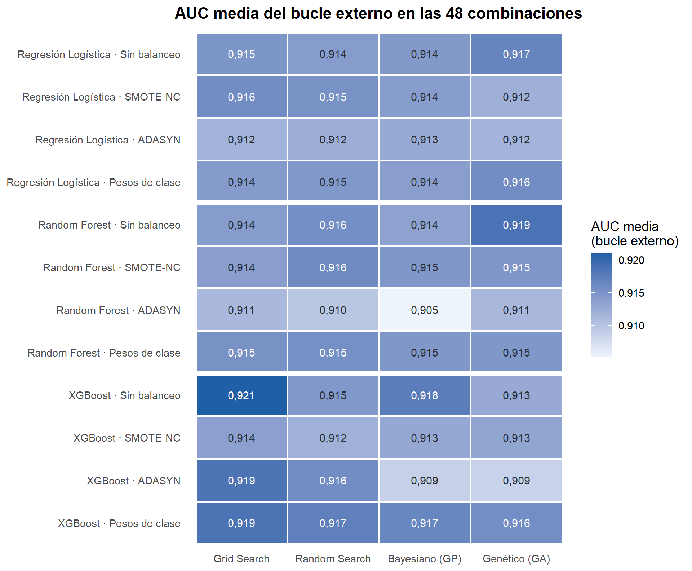
Las 48 combinaciones quedan en una franja muy estrecha: la AUC media del bucle externo va de 0,905 a 0,921, una diferencia de 0,016, mientras que la desviación estándar de cada combinación entre pliegues ronda 0,03. Es decir, la variación de un pliegue a otro es 2,2 veces la distancia entre la mejor y la peor combinación. La mejor es XGBoost sin balanceo con Grid Search (0,921 ± 0,032), seguida de Random Forest sin balanceo con Genético (GA) (0,919) y de XGBoost con pesos de clase y Grid Search (0,919). La mejor regresión logística (sin balanceo, Genético (GA)) llega a 0,917 con 5 segundos de cómputo, a 0,004 del primer puesto.
En el mapa, el optimizador que más veces ocupa el peor puesto de su fila es Genético (GA) (5 de las 12 filas). La sección 2.4 compara los optimizadores en detalle, y si estas diferencias son reales o ruido de muestreo es lo que decide la sección 2.11.
2.3.1 Efecto del balanceo
Para aislar el efecto del balanceo se promedian, para cada modelo, los 40 resultados externos de cada técnica (4 optimizadores × 10 pliegues). La AUC no depende del umbral, así que el balanceo debería moverla poco; donde sí debe notarse es en el recall y la precision con el umbral de 0,5, porque reequilibrar las clases desplaza las probabilidades hacia GBM.
bal <- pliegues |>
pivot_longer(c(auc, recall, precision, f1), names_to = "metrica", values_to = "valor") |>
group_by(modelo, balanceo, metrica) |>
summarise(media = mean(valor), de = sd(valor), .groups = "drop") |>
mutate(Modelo = factor(nombre(modelo), levels = nombre(MODELOS)),
Balanceo = factor(nombre(balanceo), levels = rev(nombre(BALANCEOS))),
metrica = factor(metrica, levels = c("auc", "recall", "precision", "f1"),
labels = c("AUC", "Recall (GBM)", "Precision", "F1")),
y = as.integer(Balanceo) + (as.integer(Modelo) - 2) * 0.22)
ggplot(bal, aes(media, y, color = Modelo)) +
geom_segment(aes(x = media - de, xend = media + de, yend = y), linewidth = 0.8) +
geom_point(size = 2.6) +
facet_wrap(~ metrica, nrow = 1, scales = "free_x") +
scale_y_continuous(breaks = seq_along(levels(bal$Balanceo)), labels = levels(bal$Balanceo)) +
scale_color_manual(values = COLOR_MODELO, name = NULL) +
labs(title = "Métricas del bucle externo por técnica de balanceo (media ± DE, umbral 0,5)",
x = NULL, y = NULL)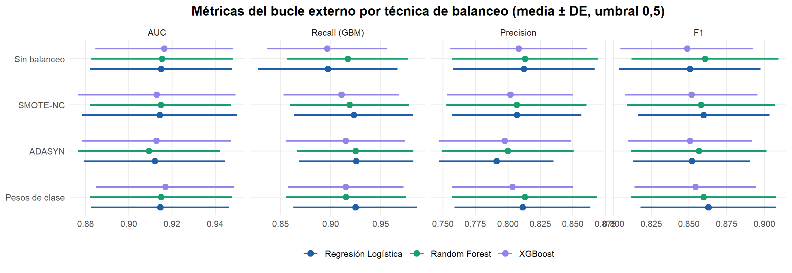
tabla_bal <- bal |>
filter(metrica %in% c("AUC", "Recall (GBM)", "F1")) |>
mutate(columna = paste(Modelo, metrica, sep = "|")) |>
select(Balanceo, columna, media) |>
mutate(media = num(media, 3), Balanceo = factor(Balanceo, levels = nombre(BALANCEOS))) |>
pivot_wider(names_from = columna, values_from = media) |>
arrange(Balanceo)
orden_cols <- as.vector(outer(c("AUC", "Recall (GBM)", "F1"), nombre(MODELOS),
function(m, mod) paste(mod, m, sep = "|")))
tabla_bal <- as.data.frame(tabla_bal[, c("Balanceo", orden_cols)])
names(tabla_bal) <- c("Balanceo", rep(c("AUC", "Recall", "F1"), 3))
tabla_resultado(tabla_bal, "Media de AUC, recall y F1 por técnica de balanceo",
align = c("l", rep("r", 9))) |>
add_header_above(c(" " = 1, "Regresión Logística" = 3, "Random Forest" = 3, "XGBoost" = 3))| Balanceo | AUC | Recall | F1 | AUC | Recall | F1 | AUC | Recall | F1 |
|---|---|---|---|---|---|---|---|---|---|
| Sin balanceo | 0,915 | 0,897 | 0,851 | 0,915 | 0,917 | 0,861 | 0,916 | 0,896 | 0,849 |
| SMOTE-NC | 0,914 | 0,923 | 0,860 | 0,915 | 0,919 | 0,858 | 0,913 | 0,911 | 0,852 |
| ADASYN | 0,912 | 0,925 | 0,852 | 0,909 | 0,925 | 0,857 | 0,913 | 0,915 | 0,851 |
| Pesos de clase | 0,915 | 0,925 | 0,863 | 0,915 | 0,915 | 0,860 | 0,917 | 0,915 | 0,854 |
media_bal <- function(m, b, met) {
pliegues |> filter(modelo == m, balanceo == b) |> pull({{ met }}) |> mean()
}
rango_auc_bal <- bal |> filter(metrica == "AUC") |> group_by(modelo) |>
summarise(r = max(media) - min(media)) |> pull(r) |> max()Como se esperaba, el balanceo apenas mueve la AUC: para cada modelo, las cuatro técnicas quedan a menos de 0,006 entre sí, porque reequilibrar las clases cambia la escala de las probabilidades pero apenas el orden de los pacientes. Su efecto aparece con el umbral de 0,5: la técnica que más sube el recall de GBM lo lleva de 0,897 a 0,925 en la logística, de 0,917 a 0,925 en Random Forest y de 0,896 a 0,915 en XGBoost, a cambio de una precision algo menor (hasta 0,021 menos), y el F1 queda prácticamente igual.
Los pesos de clase consiguen ese desplazamiento sin crear pacientes y cuestan lo mismo que no balancear. SMOTE-NC y ADASYN dan resultados parecidos, pero encarecen el cómputo: el sobremuestreo de SMOTE-NC sobre 22 variables nominales (distancias de Gower entre todos los pacientes) hace que sus combinaciones tarden en promedio 1,7 veces lo que las que no balancean (sección 2.6). Con un desbalance de 1,38:1, el sobremuestreo sintético no aporta nada que la ponderación no consiga, y ADASYN añade además valores binarios intermedios que no corresponden a ningún paciente real. La técnica de balanceo es, en este problema, una herramienta para elegir el punto de operación (más recall o más precision), no para mejorar la discriminación.
2.4 Comparación de los métodos de optimización
2.4.1 Curvas de desempeño en cualquier momento (anytime performance)
Cada búsqueda guarda la AUC interna de cada una de sus 24 evaluaciones en el orden en que se hicieron. El máximo acumulado de esa secuencia, \(\max_{s \le t} \text{AUC}_s\), es la mejor solución disponible si la búsqueda se detuviera en la evaluación \(t\). Las curvas promedian las 40 búsquedas de cada modelo y optimizador (4 balanceos × 10 pliegues externos). En Grid Search el orden es el de la rejilla, de modo que su curva depende de cómo esté escrita.
Como las cuatro curvas quedan a milésimas unas de otras, se grafica la brecha: en cada bloque (balanceo × pliegue externo), la mejor AUC interna que encontró cualquiera de los cuatro métodos menos la mejor que lleva el método en la evaluación \(t\). Escala logarítmica; más abajo es mejor.
acumulada <- function(h) {
c_ <- cummax(h)
c(c_, rep(tail(c_, 1), max(0, PRESUPUESTO - length(c_))))[seq_len(PRESUPUESTO)]
}
anytime <- map_dfr(MODELOS, function(m) {
curvas <- map(set_names(OPTIMIZADORES), function(o) {
do.call(rbind, map(BALANCEOS, ~ do.call(rbind, map(historiales[[id_combo(m, .x, o)]], acumulada))))
})
referencia <- do.call(pmax, map(curvas, ~ .x[, PRESUPUESTO]))
map_dfr(OPTIMIZADORES, function(o) {
tibble(modelo = m, metodo = o, t = seq_len(PRESUPUESTO),
brecha = colMeans(referencia - curvas[[o]]))
})
})
anytime |>
mutate(Modelo = factor(nombre(modelo), levels = nombre(MODELOS)),
Optimizador = factor(nombre(metodo), levels = nombre(OPTIMIZADORES)),
brecha = pmax(brecha, 1e-4)) |>
ggplot(aes(t, brecha, color = Optimizador, linetype = Optimizador == "Grid Search")) +
geom_line(linewidth = 1) +
facet_wrap(~ Modelo, nrow = 1) +
scale_y_log10() +
scale_color_manual(values = COLOR_OPTIMIZADOR, name = NULL) +
scale_linetype_manual(values = c(`TRUE` = "dashed", `FALSE` = "solid"), guide = "none") +
labs(title = "Curvas anytime: cuánto le falta a cada método para la mejor AUC del bloque",
x = "Evaluación t", y = "Brecha media con el mejor del bloque\n(AUC interna, escala log)")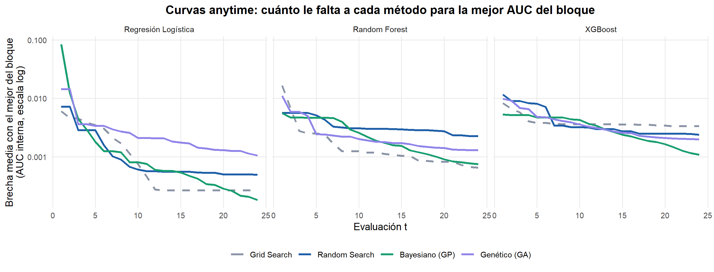
2.4.2 Evidencia cuantitativa de eficiencia
Comparar curvas a ojo no basta. Para cada uno de los 120 bloques (3 modelos × 4 balanceos × 10 pliegues externos) se toma como referencia la mejor AUC interna que encontró cualquiera de los cuatro métodos en ese bloque, y para cada método se mide:
- la mejor AUC interna tras 6, 12 y 24 evaluaciones;
- el área bajo la curva anytime (media de la curva en las 24 evaluaciones; premia llegar pronto);
- el porcentaje de bloques en que el método llega a menos de 0,001 de la referencia, y la mediana de evaluaciones que necesita para hacerlo;
- la AUC del bucle externo, que es lo que importa al final, y el tiempo por evaluación.
Las diferencias frente a Random Search se contrastan con la prueba de Wilcoxon de rangos con signo pareada por bloque (wilcox.test), con ajuste de Holm (p.adjust).
bloques <- map_dfr(MODELOS, function(m) map_dfr(BALANCEOS, function(b) {
curvas <- map(set_names(OPTIMIZADORES), ~ map(historiales[[id_combo(m, b, .x)]], acumulada))
map_dfr(seq_len(K_EXTERNO), function(f) {
referencia <- max(map_dbl(curvas, ~ tail(.x[[f]], 1)))
map_dfr(OPTIMIZADORES, function(o) {
c_ <- curvas[[o]][[f]]
llega <- c_ >= referencia - 0.001
tibble(modelo = m, balanceo = b, pliegue = f - 1L, metodo = o, t6 = c_[6], t12 = c_[12],
t24 = c_[24], area = mean(c_), llega = any(llega),
evals = if (any(llega)) which(llega)[1] else NA_integer_)
})
})
})) |>
left_join(pliegues |> select(modelo, balanceo, metodo, pliegue, auc, auc_interna, t_por_eval,
t_busqueda),
by = c("modelo", "balanceo", "metodo", "pliegue"))
eficiencia <- bloques |>
group_by(metodo) |>
summarise(t6 = mean(t6), t12 = mean(t12), t24 = mean(t24), area = mean(area),
llega = mean(llega), evals = median(evals, na.rm = TRUE), auc_externa = mean(auc),
auc_interna = mean(auc_interna), t_eval = mean(t_por_eval),
t_total = sum(t_busqueda)) |>
slice(match(OPTIMIZADORES, metodo))
ef <- function(o, col) eficiencia[[col]][eficiencia$metodo == o]
eficiencia |>
transmute(Optimizador = nombre(metodo), `t = 6` = num(t6, 4), `t = 12` = num(t12, 4),
`t = 24` = num(t24, 4), `Área anytime` = num(area, 4),
`% bloques al mejor` = pct(llega), `Evals. al mejor (mediana)` = num(evals, 0),
`AUC externa` = num(auc_externa, 4),
`Optimismo (interna − externa)` = num(auc_interna - auc_externa, 4),
`s / evaluación` = num(t_eval, 2),
`Búsqueda total (min)` = num(t_total / 60, 1)) |>
tabla_resultado("Eficiencia de los optimizadores (120 bloques)", full_width = TRUE) |>
add_header_above(c(" " = 1, "AUC interna" = 3, " " = 7))| Optimizador | t = 6 | t = 12 | t = 24 | Área anytime | % bloques al mejor | Evals. al mejor (mediana) | AUC externa | Optimismo (interna − externa) | s / evaluación | Búsqueda total (min) |
|---|---|---|---|---|---|---|---|---|---|---|
| Grid Search | 0,9157 | 0,9171 | 0,9173 | 0,9162 | 64 % | 1 | 0,9152 | 0,0021 | 0,39 | 18,7 |
| Random Search | 0,9144 | 0,9166 | 0,9171 | 0,9157 | 42 % | 1 | 0,9144 | 0,0027 | 0,45 | 21,7 |
| Bayesiano (GP) | 0,9152 | 0,9168 | 0,9181 | 0,9152 | 76 % | 1 | 0,9132 | 0,0049 | 4,26 | 204,6 |
| Genético (GA) | 0,9152 | 0,9164 | 0,9173 | 0,9156 | 45 % | 1 | 0,9138 | 0,0035 | 0,40 | 17,6 |
ref_random <- bloques |> filter(metodo == "random")
wil <- map_dfr(c("grid", "bayesiano", "genetico"), function(o) {
otro <- bloques |> filter(metodo == o) |>
inner_join(ref_random, by = c("modelo", "balanceo", "pliegue"), suffix = c("", "_r"))
map_dfr(c("t12", "t24", "area", "auc"), function(col) {
dif <- otro[[col]] - otro[[paste0(col, "_r")]]
tibble(metodo = o, medida = col, dif_media = mean(dif),
p = suppressWarnings(wilcox.test(dif, exact = FALSE)$p.value))
})
}) |>
mutate(p_holm = p.adjust(p, "holm"))
wil |>
mutate(celda = sprintf("%s (p Holm %s)", signo(dif_media), p_txt(p_holm)),
medida = factor(medida, levels = c("t12", "t24", "area", "auc"),
labels = c("Δ AUC interna t = 12", "Δ AUC interna t = 24",
"Δ área anytime", "Δ AUC externa")),
Optimizador = nombre(metodo)) |>
select(Optimizador, medida, celda) |>
pivot_wider(names_from = medida, values_from = celda) |>
tabla_resultado("Diferencia media frente a Random Search (Wilcoxon pareado, 120 bloques, ajuste de Holm)")| Optimizador | Δ AUC interna t = 12 | Δ AUC interna t = 24 | Δ área anytime | Δ AUC externa |
|---|---|---|---|---|
| Grid Search | +0,0005 (p Holm = 0,034) | +0,0003 (p Holm = 0,150) | +0,0005 (p Holm = 0,065) | +0,0009 (p Holm = 1,000) |
| Bayesiano (GP) | +0,0002 (p Holm = 0,134) | +0,0010 (p Holm < 0,001) | -0,0005 (p Holm = 0,376) | -0,0011 (p Holm = 1,000) |
| Genético (GA) | -0,0001 (p Holm = 1,000) | +0,0003 (p Holm = 0,708) | -0,0001 (p Holm = 1,000) | -0,0005 (p Holm = 1,000) |
Con las 24 evaluaciones completas los cuatro métodos llegan a una AUC interna parecida (0,9171–0,9181), pero no llegan igual de rápido ni generalizan igual:
- Grid Search es el más eficiente por unidad de presupuesto: tiene el área anytime más alta (0,9162, frente a 0,9157 de Random Search), tras 6 evaluaciones ya tiene una AUC interna de 0,9157 y alcanza la mejor solución del bloque en el 64 % de los casos; en al menos la mitad de esos bloques le basta la primera evaluación, una muestra de lo plana que es la AUC interna en estos espacios de búsqueda.
- Optimizador bayesiano (GP): frente a Random Search tiene una desventaja de 0,0005 en el área anytime (no significativa, \(p_\text{Holm} = 0{,}376\)). Sus 8 primeras evaluaciones son aleatorias, así que hasta \(t = 8\) se comporta como Random Search; a partir de ahí el proceso gaussiano concentra la búsqueda. Con las 24 evaluaciones completas tiene una ventaja de 0,0010 en la AUC interna (significativa, \(p_\text{Holm} < 0{,}001\)) y alcanza la mejor solución del bloque en el 76 % de los casos, pero en AUC externa queda en 0,9132.
- Grid Search depende del orden de la rejilla:
expand.gridhace variar más rápido la primera dimensión, así que en la logística recorre \(\lambda\) de la regularización más débil a la más fuerte alternando L1 y L2 (con L1 y \(\lambda = 1\) todos los coeficientes valen cero y la AUC es 0,5). Frente a Random Search tiene una ventaja de 0,0005 en el área anytime (no significativa, \(p_\text{Holm} = 0{,}065\)). Al final llega a una AUC interna similar porque, con 24 puntos en 2–4 dimensiones, la rejilla cubre bien los espacios de la logística y de Random Forest. - Algoritmo genético (GA): frente a Random Search tiene una desventaja de 0,0001 en el área anytime (no significativa, \(p_\text{Holm} = 1{,}000\)) y una desventaja de 0,0005 en la AUC externa (no significativa, \(p_\text{Holm} = 1{,}000\)); alcanza la mejor solución del bloque en el 45 % de los casos.
El método con más optimismo (AUC interna menos externa) es Bayesiano (GP) (0,0049, frente a 0,0021 del que menos): una búsqueda que explota con fuerza las configuraciones que mejor puntúan en esos tres pliegues internos concretos, con unos 200 pacientes por pliegue, sobreajusta en parte el ruido de la propia métrica. La mejor AUC externa es la de Grid Search (0,9152) y la peor la de Bayesiano (GP) (0,9132): una diferencia de 0,0020, muy inferior a la variación entre pliegues.
El costo por evaluación no es el mismo en los cuatro métodos: Grid, Random y el genético apenas añaden nada al ajuste de los modelos (0,45 s por evaluación en Random Search), mientras que el optimizador bayesiano ajusta un proceso gaussiano y maximiza la Mejora Esperada antes de cada evaluación nueva (4,26 s por evaluación). Con modelos que se ajustan en milisegundos, ese costo fijo domina: la ventaja por evaluación del bayesiano no es una ventaja por segundo en este problema. Sí lo sería con modelos cuyo ajuste costara minutos.
2.4.3 Historial de una búsqueda bayesiana
El gráfico de historial muestra cada evaluación y el mejor valor acumulado. Se compara con Random Search en el mismo bloque (XGBoost sin balanceo, primer pliegue externo): las 8 primeras evaluaciones del optimizador bayesiano son aleatorias, y a partir de ahí la Mejora Esperada sobre el proceso gaussiano decide dónde evaluar.
historial <- map_dfr(c("random", "bayesiano"), function(o) {
h <- historiales[[id_combo("xgboost", "ninguno", o)]][[1]]
tibble(metodo = o, t = seq_along(h), auc = h, mejor = cummax(h))
}) |>
mutate(Optimizador = factor(nombre(metodo), levels = nombre(c("random", "bayesiano"))))
ggplot(historial, aes(t)) +
geom_rect(data = tibble(Optimizador = factor(nombre("bayesiano"),
levels = levels(historial$Optimizador))),
aes(xmin = 0.5, xmax = 8.5, ymin = -Inf, ymax = Inf), inherit.aes = FALSE,
fill = "#eef2f7") +
geom_step(aes(y = mejor), color = TINTA, linewidth = 0.8) +
geom_point(aes(y = auc, color = Optimizador), size = 2.4) +
facet_wrap(~ Optimizador, nrow = 1) +
scale_color_manual(values = COLOR_OPTIMIZADOR, guide = "none") +
labs(title = "XGBoost sin balanceo · pliegue 1: evaluaciones (puntos) y mejor hasta t (línea)",
subtitle = "Zona sombreada: arranque aleatorio del optimizador bayesiano",
x = "Evaluación t", y = "AUC interna")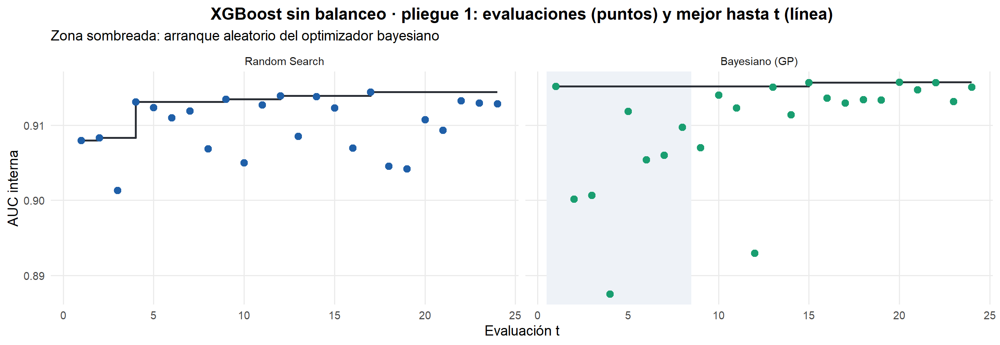
2.4.4 Convergencia y diversidad del algoritmo genético
En cada generación se registra la mejor aptitud, la aptitud media de la población y su diversidad genética. Una diversidad que cae a cero mientras la media alcanza al mejor indica convergencia prematura: la población se ha vuelto una copia del mismo individuo y el cruce deja de explorar.
G_MAX <- 8
gen <- geneticos |>
filter(generacion <= G_MAX) |>
group_by(modelo, generacion) |>
summarise(across(c(mejor, media, diversidad), mean), .groups = "drop") |>
mutate(Modelo = factor(nombre(modelo), levels = nombre(MODELOS)))
p_div <- ggplot(gen, aes(generacion, diversidad, color = Modelo)) +
geom_line(linewidth = 1) + geom_point(size = 2) +
scale_color_manual(values = COLOR_MODELO, name = NULL) +
scale_x_continuous(breaks = 0:G_MAX) +
labs(title = "Diversidad genética de la población", x = "Generación",
y = "Distancia media entre genomas\n(normalizada)")
p_brecha <- ggplot(gen, aes(generacion, pmax(mejor - media, 1e-5), color = Modelo)) +
geom_line(linewidth = 1) + geom_point(size = 2) +
scale_color_manual(values = COLOR_MODELO, name = NULL) +
scale_x_continuous(breaks = 0:G_MAX) + scale_y_log10() +
labs(title = "Brecha entre el mejor individuo y la media", x = "Generación",
y = "AUC mejor − AUC media\n(escala log)")
p_div + p_brecha + plot_layout(guides = "collect") & theme(legend.position = "bottom")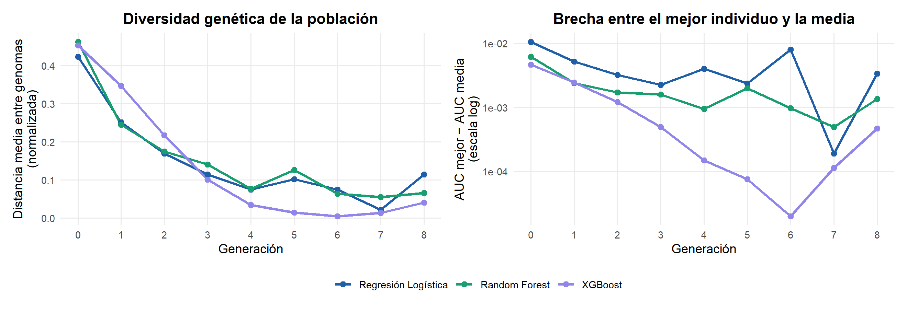
corridas <- geneticos |>
group_by(modelo, corrida) |>
summarise(generaciones = max(generacion), div_inicial = first(diversidad),
div_final = last(diversidad), .groups = "drop") |>
mutate(colapso = div_final < 0.05) |>
group_by(modelo) |>
summarise(generaciones_media = mean(generaciones), generaciones_max = max(generaciones),
div_inicial = mean(div_inicial), div_final = mean(div_final),
pct_colapso = 100 * mean(colapso)) |>
slice(match(MODELOS, modelo))
corridas |>
transmute(Modelo = nombre(modelo), `Generaciones necesarias (media)` = num(generaciones_media, 1),
`Generaciones (máx.)` = generaciones_max, `Diversidad inicial` = num(div_inicial, 3),
`Diversidad final` = num(div_final, 3),
`% corridas con diversidad final < 0,05` = num(pct_colapso, 0)) |>
tabla_resultado("Convergencia del algoritmo genético por modelo", align = c("l", rep("r", 5)))| Modelo | Generaciones necesarias (media) | Generaciones (máx.) | Diversidad inicial | Diversidad final | % corridas con diversidad final < 0,05 |
|---|---|---|---|---|---|
| Regresión Logística | 13,6 | 34 | 0,423 | 0,089 | 48 |
| Random Forest | 13,5 | 49 | 0,462 | 0,054 | 68 |
| XGBoost | 46,5 | 49 | 0,453 | 0,032 | 70 |
La diversidad media cae de 0,45 en la población inicial a 0,12 en la tercera generación, y la brecha entre el mejor individuo y la media de la población es de 0,0015 de AUC en ese punto: la población converge muy pronto. En el 48–70 % de las corridas la diversidad final queda por debajo de 0,05, lo que es convergencia prematura. Una consecuencia visible es que la población empieza a producir hijos que se decodifican a configuraciones ya evaluadas; como la memoria no les cobra presupuesto, el algoritmo necesita en promedio entre 14 y 46 generaciones (hasta 49) para completar las 24 evaluaciones nuevas. El elitismo y la selección proporcional hacen que el mejor individuo se copie muchas veces, y el cruce aritmético entre copias casi iguales produce hijos casi iguales; solo la mutación uniforme (probabilidad 0,1) reintroduce variedad.
Con 6 individuos la población es demasiado pequeña para mantener diversidad; la presión selectiva es alta para el tamaño del problema. Una población mayor (los 50 individuos por defecto de GA), una mutación más fuerte o sin elitismo mantendrían más exploración, pero con 24 evaluaciones una población grande no alcanzaría a evolucionar. En presupuestos tan pequeños, el genético está en desventaja estructural frente a un método basado en un modelo sustituto.
2.4.5 Optimización multi-fidelidad: Successive Halving
Como técnica adicional de eficiencia se probó Successive Halving sobre XGBoost (sin balanceo). La fidelidad es el número de árboles: es la medida natural del costo de un modelo de boosting y, para tasas de aprendizaje razonables, el orden de las configuraciones con pocos árboles predice bien su orden con muchos. Se parte de 81 candidatos con 15 árboles y en cada ronda se conserva el mejor tercio con el triple de árboles (factor de reducción 3): 81 → 27 → 9 → 3 candidatos con 15 → 45 → 135 → 405 árboles. El algoritmo se escribe directamente (successive_halving() en R/analisis.R): son unas pocas líneas sobre la misma evaluación interna que usan los demás métodos. Ambos métodos se evalúan con la misma validación anidada de 10 × 3 pliegues.
halving_pl <- en_cache("halving", function() comparar_halving(X_train, y_train), RECALCULAR)
halving <- halving_pl |>
group_by(metodo) |>
summarise(candidatos = mean(candidatos), arboles = mean(arboles), t = mean(t),
auc_interna = mean(auc_interna), auc_externa_de = sd(auc_externa),
auc_externa = mean(auc_externa))
hv <- function(m, col) halving[[col]][halving$metodo == m]
d_h <- halving_pl |> select(metodo, pliegue, auc_externa) |>
pivot_wider(names_from = metodo, values_from = auc_externa)
halving_p <- wilcox.test(d_h$`Successive Halving`, d_h$`Random Search`, paired = TRUE,
exact = FALSE)$p.value
halving |>
transmute(`Método` = metodo, `Configuraciones evaluadas` = num(candidatos, 0),
`Árboles ajustados por fold interno` = num(arboles, 0),
`Tiempo por búsqueda (s)` = num(t, 2), `AUC interna` = num(auc_interna, 4),
`AUC externa (media ± DE)` = paste(num(auc_externa, 4), "±", num(auc_externa_de, 4))) |>
tabla_resultado("Successive Halving frente a Random Search (XGBoost sin balanceo)",
align = c("l", rep("r", 5)))| Método | Configuraciones evaluadas | Árboles ajustados por fold interno | Tiempo por búsqueda (s) | AUC interna | AUC externa (media ± DE) |
|---|---|---|---|---|---|
| Random Search | 24 | 5.491 | 7,40 | 0,9173 | 0,9167 ± 0,0389 |
| Successive Halving | 81 | 4.860 | 12,72 | 0,9141 | 0,9191 ± 0,0383 |
Successive Halving obtuvo una AUC externa algo mayor que Random Search en este problema, aunque la diferencia no es significativa: evaluó más del triple de configuraciones (81 frente a 24), con 4.860 árboles por pliegue interno frente a 5.491, tardó 12,7 s por búsqueda frente a 7,4 s, y su AUC externa fue de 0,919 frente a 0,917 (Wilcoxon pareado sobre los 10 pliegues, \(p =\) 0,575). Es decir, la técnica pensada para ahorrar cómputo tardó más. Hay dos razones para que la multi-fidelidad no compense aquí. La primera es de costo: con 400 pacientes por pliegue interno un árbol cuesta microsegundos, de modo que el tiempo lo dominan los costos fijos de cada ajuste (preparar los datos, crear el modelo, la validación cruzada), y Halving hace 120 evaluaciones por búsqueda en lugar de 24; ahorrar árboles no ahorra tiempo. La segunda es de fidelidad: con learning rates bajos, 15 árboles son un modelo muy incompleto y su ranking puede predecir mal el de 405, así que la primera ronda corre el riesgo de descartar configuraciones que habrían sido buenas. Los métodos multi-fidelidad rinden cuando cada evaluación completa es cara (redes neuronales, datos de millones de filas); aquí no lo es.
2.5 Selección de los modelos finales
Para cada familia se elige la combinación de balanceo y optimizador con mayor AUC media en el bucle externo. Después, ese optimizador se ejecuta una vez más sobre los 671 pacientes de entrenamiento completos para fijar los hiperparámetros definitivos, y el pipeline resultante se ajusta con todos ellos. La AUC del bucle externo es la estimación de generalización del procedimiento (balanceo + optimizador + modelo); el modelo final es el que ese procedimiento produce con todos los datos disponibles.
seleccion <- seleccionar(resumen)
finales <- en_cache("modelos_finales", function() entrenar_finales(seleccion, X_train, y_train),
RECALCULAR)
mejor <- seleccion$modelo[which.max(seleccion$auc_media)]
formatear_hiper <- function(h) {
paste(map2_chr(names(h), h, function(k, v) {
paste0("`", k, "` = ", if (is.numeric(v) && v != round(v)) num(v, 4) else as.character(v))
}), collapse = "; ")
}
seleccion |>
transmute(Modelo = nombre(modelo), Balanceo = nombre(balanceo), Optimizador = nombre(metodo),
`AUC externa (10 pliegues)` = paste(num(auc_media, 4), "±", num(auc_de, 4)),
`Hiperparámetros finales` = map_chr(modelo, ~ formatear_hiper(finales[[.x]]$params))) |>
tabla_resultado("Modelos finales y sus hiperparámetros", full_width = TRUE)| Modelo | Balanceo | Optimizador | AUC externa (10 pliegues) | Hiperparámetros finales |
|---|---|---|---|---|
| Regresión Logística | Sin balanceo | Genético (GA) | 0,9167 ± 0,0309 |
penalizacion = l2; lambda = 0,0013
|
| Random Forest | Sin balanceo | Genético (GA) | 0,9187 ± 0,0324 |
max.depth = 9; min.bucket = 8; frac.mtry = 0,4327
|
| XGBoost | Sin balanceo | Grid Search | 0,9210 ± 0,0323 |
max_depth = 3; eta = 0,1000; nrounds = 100; min_child_weight = 1
|
2.6 Optimización computacional
2.6.1 Complejidad algorítmica
Notación: \(n\) pacientes, \(p\) predictoras, \(T\) árboles, \(d\) profundidad máxima, \(I\) iteraciones del solver, \(B\) número de bins del histograma (256 por defecto en XGBoost).
| Modelo | Entrenamiento | Inferencia (por paciente) | Optimización aplicada |
|---|---|---|---|
Regresión logística (glmnet) |
\(O(I \cdot n \cdot p)\) | \(O(p)\) | Descenso por coordenadas, lineal en \(n\) y \(p\) por iteración |
Random Forest (ranger) |
\(O(T \cdot m \cdot n \log n)\), con \(m\) = variables por división | \(O(T \cdot d)\) | Submuestreo de variables (\(m < p\)), implementación en C++, paralelización entre pliegues |
| XGBoost exacto | \(O(T \cdot d \cdot p \cdot n \log n)\) | \(O(T \cdot d)\) | — |
XGBoost hist |
\(O(n \cdot p)\) una vez + \(O(T \cdot d \cdot (n \cdot p + B \cdot p))\) | \(O(T \cdot d)\) | Histogramas en lugar de ordenar, early stopping |
La teoría se contrasta con el tiempo medido variando \(n\) y \(p\) de forma controlada: se remuestrean pacientes del entrenamiento (con reemplazo) para obtener \(n\) entre 200 y 25 600, y se añaden columnas binarias de ruido para llevar \(p\) de 23 a 736. La pendiente de \(\log t\) frente a \(\log n\) (o \(\log p\)) en el tramo de los cuatro tamaños mayores es el exponente empírico de escalamiento: si el entrenamiento es \(O(n)\), la pendiente debería acercarse a 1; si es \(O(n \log n)\), a algo ligeramente mayor que 1. Con pocos datos domina el costo fijo de cada ajuste y la pendiente es menor.
escalamiento_t <- en_cache("escalamiento", function() escalamiento(finales, X_train, y_train),
RECALCULAR)
pendientes <- pendientes_escalamiento(escalamiento_t)
pend <- function(m, eje) pendientes$pendiente[pendientes$modelo == m & pendientes$eje == eje]
grafico_escala <- function(e, titulo, etiqueta_x) {
d <- escalamiento_t |>
filter(eje == e) |>
left_join(pendientes, by = c("modelo", "eje")) |>
mutate(Modelo = factor(sprintf("%s (pendiente %s)", nombre(modelo), num(pendiente)),
levels = sprintf("%s (pendiente %s)", nombre(MODELOS),
map_chr(MODELOS, ~ num(pend(.x, e))))))
colores <- set_names(unname(COLOR_MODELO), levels(d$Modelo))
ggplot(d, aes(valor, t, color = Modelo)) +
geom_line(linewidth = 1) + geom_point(size = 2) +
scale_x_log10(breaks = unique(d$valor), labels = label_number(big.mark = " ")) +
scale_y_log10() +
scale_color_manual(values = colores, name = NULL) +
guides(color = guide_legend(ncol = 1)) +
labs(title = titulo, x = etiqueta_x, y = "Tiempo de entrenamiento (s, escala log)")
}
grafico_escala("n", "Escalamiento con el número de pacientes", "Pacientes n (escala log)") +
grafico_escala("p", "Escalamiento con el número de predictoras", "Predictoras p (escala log)")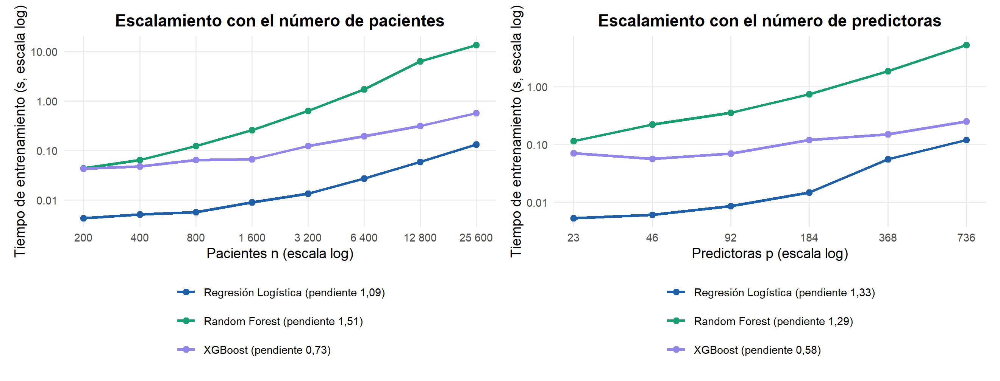
Las pendientes empíricas se leen a la luz del costo fijo de cada ajuste:
- Regresión logística (
glmnet): pendiente 1,09 en \(n\) y 1,33 en \(p\). El descenso por coordenadas es \(O(I \cdot n \cdot p)\); con un solo valor de \(\lambda\) y pocos datos el costo fijo de la llamada pesa mucho, y la pendiente solo se acerca a 1 en los tamaños grandes. - Random Forest (
ranger): pendientes de 1,51 en \(n\) y 1,29 en \(p\). Una pendiente mayor que 1 en \(n\) indica que, además del costo por división, crece el propio árbol: con más pacientes, más nodos superan el mínimo de 8 pacientes por hoja y siguen dividiéndose hasta el límite de profundidad (max.depth= 9).mtryes una fracción fija de \(p\), así que el costo por nodo crece con \(p\). - XGBoost (
hist): pendiente 0,73 en \(n\) y 0,58 en \(p\). Con árboles poco profundos (max_depth= 3) cada ronda es barata, así que el costo fijo de construir el modelo y los histogramas pesa más que el tamaño de los datos.
En el tamaño real del problema (\(n = 671\), \(p = 23\)) los tres modelos se entrenan en menos de 0,2 s; ninguno está cerca de ser un cuello de botella, y lo que encarece el experimento es el número de ajustes (34.038) y el costo de los propios optimizadores, no el de cada modelo.
2.6.2 XGBoost: histogramas frente a método exacto, y early stopping
El método exact ordena los valores de cada variable en cada nodo; hist los agrupa una sola vez en \(B\) bins y busca divisiones sobre los histogramas. Con variables binarias casi no hay valores que agrupar, así que la ganancia de hist aparece sobre todo al crecer \(n\) y \(p\). El early stopping (early_stopping_rounds de xgb.train) detiene el boosting cuando la pérdida en un conjunto de validación independiente (20 % del pliegue de entrenamiento, estratificado) deja de mejorar durante 30 rondas.
xm <- en_cache("xgb_metodos", function() xgb_metodos(finales, X_train, y_train), RECALCULAR) |>
pivot_wider(names_from = metodo, values_from = t) |>
mutate(aceleracion = exact / hist)
acel <- function(n_, p_) xm$aceleracion[xm$n == n_ & xm$p == p_]
xm |>
transmute(n = num(n, 0), p, `exact (s)` = num(exact, 3), `hist (s)` = num(hist, 3),
`Aceleración (exact / hist)` = num(aceleracion, 2)) |>
tabla_resultado("Tiempo de entrenamiento de XGBoost: método exacto frente a histogramas",
align = rep("r", 5))| n | p | exact (s) | hist (s) | Aceleración (exact / hist) |
|---|---|---|---|---|
| 671 | 23 | 0,119 | 0,041 | 2,92 |
| 6.400 | 23 | 0,684 | 0,123 | 5,57 |
| 6.400 | 184 | 4,681 | 0,503 | 9,30 |
es_tab <- en_cache("early_stopping", function() early_stopping(finales, X_train, y_train),
RECALCULAR) |>
group_by(variante) |>
summarise(arboles = mean(arboles), tiempo_s = mean(t), auc_media = mean(auc),
auc_de = sd(auc))
es_v <- function(v, col) es_tab[[col]][str_starts(es_tab$variante, v)]
es_tab |>
transmute(Variante = variante, `Árboles (media)` = num(arboles, 1),
`Tiempo (s)` = num(tiempo_s, 3),
`AUC (media ± DE)` = paste(num(auc_media, 4), "±", num(auc_de, 4))) |>
tabla_resultado("Early stopping frente a número de árboles fijo (5 pliegues)",
align = c("l", "r", "r", "r"))| Variante | Árboles (media) | Tiempo (s) | AUC (media ± DE) |
|---|---|---|---|
| Early stopping (máx. 2000) | 53,0 | 0,191 | 0,9111 ± 0,0230 |
| Fijo (hiperparámetros finales) | 100,0 | 0,058 | 0,9163 ± 0,0256 |
El método hist es más rápido en los tres escenarios: 2,9 veces en los datos reales, 5,6 veces con 6 400 pacientes y 9,3 veces con 6 400 pacientes y 184 predictoras. La ganancia es mayor cuando crecen los datos y, sobre todo, el número de predictoras, porque el método exacto paga el ordenamiento en cada nodo y en cada variable, mientras que hist construye los histogramas una sola vez.
El early stopping no compensa aquí: el criterio de parada eligió en promedio 53 árboles frente a los 100 del modelo final, tardó 3,3 veces más (tiene que evaluar la pérdida de validación en cada ronda) y obtuvo una AUC de 0,911 frente a 0,916, porque entrena con el 80 % del pliegue (el 20 % restante se reserva para decidir cuándo parar). El número de árboles ya está optimizado como hiperparámetro dentro de la validación anidada, de modo que el early stopping solo duplica esa decisión con menos datos. Sería útil si se fijara un learning rate y se dejara libre el número de árboles.
2.6.3 Paralelización y perfilamiento
El bucle externo es vergonzosamente paralelo: cada pliegue busca y evalúa de forma independiente. La validación anidada lo reparte con future.apply::future_lapply sobre un plan multisession (sesiones de R separadas, que funcionan igual en Windows, macOS y Linux), y los modelos usan un solo hilo (num.threads = 1, nthread = 1) para no sobresuscribir los núcleos. Se mide el tiempo de reloj de una validación anidada completa (Random Search, XGBoost sin balanceo) con 1 y 2 procesos. No hay GPU disponible en el equipo de ejecución; con 671 pacientes la transferencia de datos a la GPU costaría más que el propio entrenamiento.
par_tab <- en_cache("paralelo", function() paralelo(X_train, y_train), RECALCULAR) |>
mutate(aceleracion = t[1] / t, eficiencia = aceleracion / procesos)
par_tab |>
transmute(Procesos = procesos, `Tiempo (s)` = num(t, 1), `Aceleración` = num(aceleracion, 2),
Eficiencia = num(eficiencia, 2)) |>
tabla_resultado("Validación anidada completa con 1 y 2 procesos", align = rep("r", 4))| Procesos | Tiempo (s) | Aceleración | Eficiencia |
|---|---|---|---|
| 1 | 90,1 | 1,00 | 1,00 |
| 2 | 64,7 | 1,39 | 0,70 |
perfil <- en_cache("perfil", function() perfilar(X_train, y_train), RECALCULAR)
perfil$tabla |>
transmute(`Función` = sprintf("`%s`", gsub('"', "", funcion)),
`Tiempo propio (s)` = num(propio_s, 2), `% del total` = num(propio_pct, 1),
`Tiempo acumulado (s)` = num(total_s, 2)) |>
tabla_resultado(sprintf("Rprof: funciones con más tiempo propio (Random Search, logística + SMOTE-NC, %s s en total)",
num(perfil$total, 1)), align = c("l", "r", "r", "r"))| Función | Tiempo propio (s) | % del total | Tiempo acumulado (s) |
|---|---|---|---|
.Call
|
1,76 | 16,0 | 1,76 |
apply
|
1,14 | 10,4 | 4,63 |
unique
|
1,05 | 9,6 | 1,40 |
tabulate
|
1,05 | 9,6 | 1,28 |
[<-.factor
|
0,92 | 8,4 | 0,96 |
factor
|
0,91 | 8,3 | 0,99 |
unlist
|
0,62 | 5,6 | 0,64 |
FUN
|
0,49 | 4,5 | 10,98 |
desglose_t <- en_cache("desglose", function() desglose(finales, X_train, y_train), RECALCULAR)
desglose_t |>
transmute(`Pipeline final` = paste(nombre(modelo), "·", nombre(balanceo)),
`Escalado (ms)` = num(escalado_ms, 1), `Balanceo (ms)` = num(balanceo_ms, 1),
`Modelo (ms)` = num(modelo_ms, 1)) |>
tabla_resultado("Desglose del ajuste de cada pipeline final", align = c("l", "r", "r", "r"))| Pipeline final | Escalado (ms) | Balanceo (ms) | Modelo (ms) |
|---|---|---|---|
| Regresión Logística · Sin balanceo | 0,2 | 0,0 | 6,4 |
| Random Forest · Sin balanceo | 0,3 | 0,0 | 123,0 |
| XGBoost · Sin balanceo | 0,2 | 0,0 | 47,2 |
La paralelización del bucle externo con dos procesos reduce el tiempo de una validación anidada completa de 90 s a 65 s: una aceleración de 1,39 y una eficiencia de 0,70. No llega a la aceleración ideal de 2 porque arrancar las sesiones de R, cargar en ellas los paquetes y los módulos del capítulo y enviarles los datos tiene un costo, y los dos procesos compiten por la memoria y la caché; aun así, cada pliegue externo es independiente, de modo que con más núcleos libres la aceleración seguiría creciendo hasta 10 procesos, uno por pliegue.
El perfilamiento con Rprof muestra que, en la combinación regresión logística + SMOTE-NC, el tiempo no se va en el modelo (la logística se ajusta en milisegundos) sino en el balanceo: las funciones con más tiempo propio son llamadas a código compilado (.Call, el 16 % del total) y operaciones sobre factores y tablas (unique, tabulate, factor), que es el trabajo que hace themis para calcular las distancias de Gower entre pacientes y asignar a cada binaria el valor más frecuente entre los vecinos. Es la razón por la que las combinaciones con SMOTE-NC tardan varias veces más que las demás. Los tres pipelines finales no balancean, así que en ellos casi todo el tiempo es el ajuste del modelo: de 6,4 ms en Regresión Logística a 123 ms en Random Forest, frente a menos de 1 ms de escalado.
2.6.4 Modelo estándar frente a optimizado
La versión estándar es cada modelo con los valores por defecto de su función en R: glm sin penalización, ranger con 500 árboles y mtry \(= \lfloor\sqrt{p}\rfloor\), y xgboost con 100 rondas de profundidad 6 y eta 0,3. La optimizada es el pipeline final. El desempeño se compara con una validación cruzada de 10 pliegues sobre el entrenamiento, para no gastar el conjunto de prueba; la memoria es la que R asigna durante el ajuste (bench::mark; no incluye la memoria interna de C++ de ranger y xgboost) y el tamaño es el del modelo serializado.
est <- en_cache("estandar_vs_optimizado",
function() comparar_estandar(finales, X_train, y_train, X_test), RECALCULAR) |>
group_by(modelo) |>
mutate(delta = auc_media - auc_media[version == "Estándar"]) |>
ungroup()
ev_ <- function(m, v, col) est[[col]][est$modelo == m & est$version == v]
est |>
transmute(Modelo = modelo, `Versión` = version,
`Entrenamiento (ms)` = num(entrenamiento_ms, 1),
`Inferencia 168 pac. (ms)` = num(inferencia_ms, 1),
`Memoria asignada (MB)` = num(memoria_mb, 2), `Tamaño modelo (KB)` = num(tamano_kb, 1),
`AUC CV` = paste(num(auc_media, 4), "±", num(auc_de, 4)),
`Δ AUC vs estándar` = signo(delta, 4)) |>
tabla_resultado("Modelo estándar frente a optimizado", align = c("l", "l", rep("r", 6))) |>
collapse_rows(columns = 1, valign = "top")| Modelo | Versión | Entrenamiento (ms) | Inferencia 168 pac. (ms) | Memoria asignada (MB) | Tamaño modelo (KB) | AUC CV | Δ AUC vs estándar |
|---|---|---|---|---|---|---|---|
| Regresión Logística | Estándar | 32,9 | 3,5 | 8,24 | 825,8 | 0,9159 ± 0,0363 | 0,0000 |
| Optimizado | 5,8 | 1,4 | 0,43 | 1,9 | 0,9189 ± 0,0385 | +0,0029 | |
| Random Forest | Estándar | 279,1 | 77,7 | 2,51 | 2.619,5 | 0,9161 ± 0,0362 | 0,0000 |
| Optimizado | 112,9 | 21,9 | 0,88 | 556,1 | 0,9182 ± 0,0352 | +0,0021 | |
| XGBoost | Estándar | 72,0 | 4,1 | 0,13 | 165,3 | 0,8980 ± 0,0400 | 0,0000 |
| Optimizado | 49,5 | 3,5 | 0,13 | 109,6 | 0,9199 ± 0,0378 | +0,0219 |
La optimización mejora con claridad a XGBoost (+0,022 de AUC; sus valores por defecto, profundidad 6 y eta 0,3, son demasiado agresivos para 671 pacientes) y también a Random Forest (+0,002; ranger por defecto ya usa hojas de al menos 10 pacientes en modo probabilidad, una regularización razonable). El Random Forest optimizado tiene 200 árboles frente a 500 y árboles más pequeños: ocupa 556 KB serializado frente a 2.620 KB, y se entrena en 113 ms frente a 279 ms.
En la regresión logística la versión optimizada queda a la par de la estándar sin penalización (+0,0029), una diferencia muy inferior a la desviación entre pliegues (≈ 0,04). Es un recordatorio de que la optimización selecciona con una estimación ruidosa: con 23 predictoras y 671 pacientes la regresión logística apenas necesita regularización. La versión estándar (glm) ocupa además mucho más porque guarda una copia de los datos y de los residuos dentro del objeto (826 KB frente a 1,9 KB de glmnet). Todos los modelos predicen los 168 pacientes de prueba en menos de 80 ms.
2.7 Evaluación final en el conjunto de prueba
Los tres pipelines finales se aplican, por primera y única vez, a los 168 pacientes de prueba. Las predicciones usan el umbral de 0,5 sobre la probabilidad de GBM; el intervalo de confianza de la AUC es bootstrap BCa (boot, 2 000 réplicas remuestreando pacientes).
proba_test <- map(set_names(MODELOS), ~ predecir(finales[[.x]]$pipeline, X_test))
metricas_test <- map_dfr(MODELOS, function(m) {
p <- proba_test[[m]]
met <- metricas(y_test, p)
ic <- ic_bootstrap(function(z) auc_roc(z$y, z$p), data.frame(y = y_test, p = p))
pred <- as.integer(p >= 0.5)
tibble(Modelo = nombre(m), Accuracy = met[["accuracy"]], Precision = met[["precision"]],
`Recall (GBM)` = met[["recall"]],
Especificidad = sum(pred == 0 & y_test == 0) / sum(y_test == 0),
F1 = met[["f1"]], AUC = met[["auc"]], ic_inf = ic[1], ic_sup = ic[2],
Brier = met[["brier"]], FN = sum(pred == 0 & y_test == 1),
FP = sum(pred == 1 & y_test == 0))
})
mt <- function(m, col) metricas_test[[col]][metricas_test$Modelo == m]
metricas_test |>
mutate(`IC 95 % AUC` = sprintf("[%s; %s]", num(ic_inf, 3), num(ic_sup, 3)),
across(c(Accuracy, Precision, `Recall (GBM)`, Especificidad, F1, AUC, Brier),
~ num(.x, 3))) |>
select(Modelo, Accuracy, Precision, `Recall (GBM)`, Especificidad, F1, AUC, `IC 95 % AUC`,
Brier, FN, FP) |>
tabla_resultado("Métricas en el conjunto de prueba (n = 168, umbral 0,5)",
align = c("l", rep("r", 10)), full_width = TRUE)| Modelo | Accuracy | Precision | Recall (GBM) | Especificidad | F1 | AUC | IC 95 % AUC | Brier | FN | FP |
|---|---|---|---|---|---|---|---|---|---|---|
| Regresión Logística | 0,875 | 0,818 | 0,900 | 0,857 | 0,857 | 0,920 | [0,869; 0,955] | 0,103 | 7 | 14 |
| Random Forest | 0,857 | 0,780 | 0,914 | 0,816 | 0,842 | 0,928 | [0,879; 0,959] | 0,101 | 6 | 18 |
| XGBoost | 0,857 | 0,803 | 0,871 | 0,847 | 0,836 | 0,926 | [0,880; 0,957] | 0,104 | 9 | 15 |
confusion <- map_dfr(MODELOS, function(m) {
tibble(Modelo = nombre(m), real = y_test, predicho = as.integer(proba_test[[m]] >= 0.5))
}) |>
count(Modelo, real, predicho) |>
complete(Modelo, real = 0:1, predicho = 0:1, fill = list(n = 0)) |>
group_by(Modelo, real) |>
mutate(prop = n / sum(n)) |>
ungroup() |>
mutate(Modelo = factor(Modelo, levels = nombre(MODELOS)),
real = factor(real, levels = c(1, 0), labels = c("GBM", "LGG")),
predicho = factor(predicho, levels = c(0, 1), labels = c("LGG", "GBM")))
ggplot(confusion, aes(predicho, real, fill = prop)) +
geom_tile(color = "white", linewidth = 1) +
geom_text(aes(label = sprintf("%d\n(%s)", n, pct(prop)), color = prop > 0.5),
fontface = "bold", size = 3.8) +
scale_fill_gradient(low = "#eef4fb", high = "#1f5fa8", limits = c(0, 1), guide = "none") +
scale_color_manual(values = c(`TRUE` = "white", `FALSE` = TINTA), guide = "none") +
facet_wrap(~ Modelo, nrow = 1) +
labs(title = "Matrices de confusión en el conjunto de prueba (n = 168, umbral 0,5)",
x = "Predicho", y = "Real") +
theme(panel.grid = element_blank())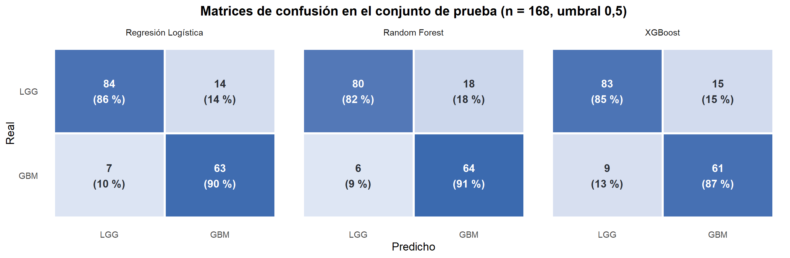
roc <- map_dfr(MODELOS, function(m) {
r <- pROC::roc(y_test, proba_test[[m]], levels = c(0, 1), direction = "<", quiet = TRUE)
tibble(modelo = m, fpr = 1 - r$specificities, tpr = r$sensitivities) |> arrange(fpr, tpr)
})
etiquetas_roc <- sprintf("%s (AUC = %s)", nombre(MODELOS),
map_chr(nombre(MODELOS), ~ num(mt(.x, "AUC"), 3)))
roc <- roc |> mutate(Modelo = factor(etiquetas_roc[match(modelo, MODELOS)], levels = etiquetas_roc))
ggplot(roc, aes(fpr, tpr, color = Modelo)) +
geom_abline(linetype = "dashed", color = "#9aa5b1") +
geom_path(linewidth = 1) +
scale_color_manual(values = set_names(unname(COLOR_MODELO), etiquetas_roc), name = NULL) +
coord_equal() +
guides(color = guide_legend(ncol = 1)) +
labs(title = "Curvas ROC en el conjunto de prueba",
x = "Tasa de falsos positivos (1 − especificidad)",
y = "Tasa de verdaderos positivos (recall GBM)")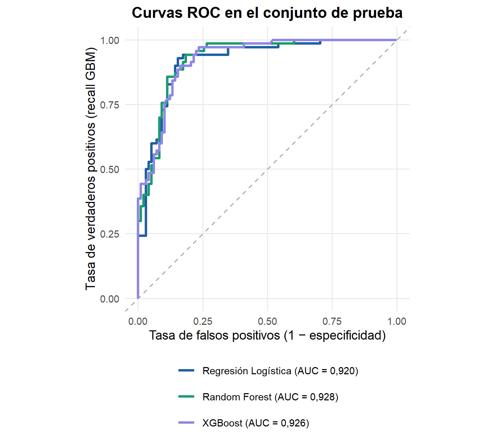
En el conjunto de prueba los tres modelos son prácticamente equivalentes: AUC de 0,920 (logística), 0,928 (Random Forest) y 0,926 (XGBoost), con intervalos de confianza de unos ±0,04 que se solapan casi por completo. Las AUC en prueba son incluso algo mayores que las del bucle externo (0,917–0,921), una señal de que la validación anidada no sobreestimó el desempeño.
Con el umbral de 0,5 los modelos detectan entre el 87 % y el 91 % de los glioblastomas (6 a 9 falsos negativos de 70) y clasifican correctamente entre el 82 % y el 86 % de los LGG. Regresión Logística tiene la mejor accuracy (0,875) y también el menor número de falsos positivos (14). Los errores no son simétricos: hay más falsos positivos que falsos negativos (47 frente a 22 sumando los tres modelos), lo cual es deseable en este contexto clínico, porque un LGG marcado como sospechoso de GBM lleva a pruebas adicionales, mientras que un GBM clasificado como LGG retrasa un tratamiento urgente. Si se quisiera aún más sensibilidad, bastaría con bajar el umbral, pero el costo crece rápido: según las curvas ROC, llevar el recall al 95 % exige aceptar entre un 22 % y un 35 % de falsos positivos.
2.8 Calibración de probabilidades
Una AUC alta solo garantiza que el modelo ordena bien a los pacientes; no que una probabilidad de 0,8 signifique que 8 de cada 10 de esos pacientes tienen GBM. Si el modelo se usara para apoyar decisiones clínicas, la probabilidad misma importa. La calibración se evalúa con:
- el diagrama de confiabilidad (probabilidad predicha media frente a frecuencia observada de GBM en bins de igual ancho);
- el Brier score, error cuadrático medio entre probabilidad y desenlace, que combina calibración y discriminación;
- el ECE (Expected Calibration Error), promedio ponderado de la distancia entre confianza y frecuencia observada.
Se usan dos fuentes: las probabilidades fuera de pliegue del bucle externo sobre los 671 pacientes de entrenamiento (más puntos por bin) y las del conjunto de prueba.
oof_sel <- map(set_names(MODELOS),
~ oof[[id_combo(.x, finales[[.x]]$balanceo, finales[[.x]]$metodo)]])
bind_rows(
map_dfr(MODELOS, ~ curva_confiabilidad(y_train, oof_sel[[.x]], 10) |>
mutate(modelo = .x, fuente = "oof")),
map_dfr(MODELOS, ~ curva_confiabilidad(y_test, proba_test[[.x]], 5) |>
mutate(modelo = .x, fuente = "test"))
) |>
mutate(Modelo = factor(nombre(modelo), levels = nombre(MODELOS)),
fuente = factor(fuente, levels = c("oof", "test"),
labels = c("Fuera de pliegue (entrenamiento, n = 671)",
"Conjunto de prueba (n = 168)"))) |>
ggplot(aes(predicha, observada, color = Modelo)) +
geom_abline(linetype = "dashed", color = "#9aa5b1") +
geom_line(linewidth = 1) +
geom_point(aes(size = n), alpha = 0.85) +
facet_wrap(~ fuente) +
scale_color_manual(values = COLOR_MODELO, name = NULL) +
scale_size_area(max_size = 5, guide = "none") +
coord_equal(xlim = c(0, 1), ylim = c(0, 1)) +
labs(title = "Diagramas de confiabilidad (tamaño del punto = pacientes en el bin)",
x = "Probabilidad predicha de GBM", y = "Frecuencia observada de GBM")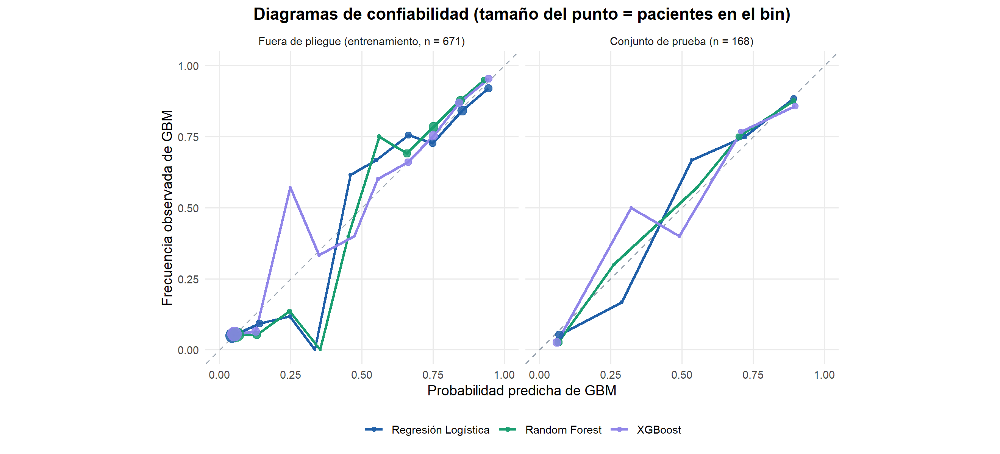
cal <- tibble(modelo = MODELOS,
brier_oof = map_dbl(MODELOS, ~ mean((oof_sel[[.x]] - y_train)^2)),
ece_oof = map_dbl(MODELOS, ~ ece(y_train, oof_sel[[.x]])),
brier_test = map_dbl(MODELOS, ~ mean((proba_test[[.x]] - y_test)^2)),
ece_test = map_dbl(MODELOS, ~ ece(y_test, proba_test[[.x]], 5)))
cm_ <- function(m, col) cal[[col]][cal$modelo == m]
cal |>
transmute(Modelo = nombre(modelo), `Brier OOF` = num(brier_oof, 4), `ECE OOF` = num(ece_oof, 4),
`Brier test` = num(brier_test, 4), `ECE test` = num(ece_test, 4)) |>
tabla_resultado("Brier y ECE fuera de pliegue y en prueba", align = c("l", rep("r", 4)))| Modelo | Brier OOF | ECE OOF | Brier test | ECE test |
|---|---|---|---|---|
| Regresión Logística | 0,1038 | 0,0312 | 0,1025 | 0,0327 |
| Random Forest | 0,1043 | 0,0369 | 0,1010 | 0,0368 |
| XGBoost | 0,1048 | 0,0176 | 0,1040 | 0,0525 |
2.8.1 Recalibración
Se prueban las dos técnicas clásicas, ajustadas con validación cruzada de 5 pliegues sobre el entrenamiento: el escalado de Platt (una regresión logística, glm, sobre el log-odds del modelo; paramétrico y estable con pocos datos) y la regresión isotónica (isoreg, una función monótona escalonada, más flexible pero con riesgo de sobreajuste con pocos pacientes por bin). En cada pliegue se ajusta el pipeline con cuatro quintas partes y el calibrador con la quinta restante, y la probabilidad final es la media de los cinco pares. Su efecto se mide en el conjunto de prueba.
recal <- en_cache("recalibracion",
function() recalibrar(finales, X_train, y_train, X_test, y_test), RECALCULAR)
rc <- function(m, met) recal$ece[recal$Modelo == m & recal$Metodo == met]
recal |>
transmute(Modelo, `Método` = Metodo, `AUC test` = num(auc, 4), `Brier test` = num(brier, 4),
`ECE test` = num(ece, 4)) |>
tabla_resultado("Efecto de la recalibración en el conjunto de prueba",
align = c("l", "l", "r", "r", "r")) |>
collapse_rows(columns = 1, valign = "top")| Modelo | Método | AUC test | Brier test | ECE test |
|---|---|---|---|---|
| Regresión Logística | Sin recalibrar | 0,9203 | 0,1025 | 0,0327 |
| Platt | 0,9191 | 0,1027 | 0,0333 | |
| Isotónica | 0,9152 | 0,1037 | 0,0286 | |
| Random Forest | Sin recalibrar | 0,9284 | 0,1010 | 0,0368 |
| Platt | 0,9265 | 0,1017 | 0,0499 | |
| Isotónica | 0,9227 | 0,1064 | 0,0376 | |
| XGBoost | Sin recalibrar | 0,9261 | 0,1040 | 0,0525 |
| Platt | 0,9233 | 0,1043 | 0,0280 | |
| Isotónica | 0,9223 | 0,1059 | 0,0414 |
El modelo mejor calibrado fuera de pliegue es XGBoost (ECE 0,018) y el peor Random Forest (ECE 0,037 fuera de pliegue y 0,037 en prueba). Las curvas siguen la diagonal en los extremos, donde están casi todos los pacientes, y se separan en la zona intermedia (0,3–0,6), donde hay pocos y la frecuencia observada oscila. Un efecto conocido explica parte de las desviaciones: el promedio de árboles de Random Forest comprime las probabilidades hacia el centro. Los tres modelos finales se entrenan sin balanceo, así que sus probabilidades no están desplazadas hacia GBM.
La recalibración cambia el ECE sin mover apenas la AUC (una transformación monótona no cambia el orden de los pacientes; la isotónica, al ser escalonada, puede crear empates y moverla un poco). El ECE más bajo en prueba lo da la regresión isotónica en Regresión Logística (0,029); el modelo sin recalibrar en Random Forest (0,037); el escalado de Platt en XGBoost (0,028). En Random Forest, el peor calibrado fuera de pliegue, ninguna de las dos técnicas mejora el ECE en prueba (0,037 sin recalibrar, 0,050 con Platt y 0,038 con la isotónica). El Brier score casi no cambia, porque está dominado por la discriminación, que es la misma. Con solo 168 pacientes de prueba repartidos en cinco bins estas cifras tienen bastante incertidumbre, y las diferencias de ECE entre métodos son de unas centésimas; la conclusión robusta es que si se van a usar las probabilidades como riesgo, conviene comprobar su calibración y recalibrarlas cuando mejore.
2.9 Interpretabilidad: SHAP y LIME
2.9.1 Valores de Shapley
Los valores SHAP reparten la predicción de cada paciente entre sus variables según el valor de Shapley de la teoría de juegos cooperativos: la contribución de una variable es su aporte marginal promedio sobre todos los órdenes posibles en que las variables pueden “entrar” al modelo. Es la única atribución que cumple a la vez eficiencia (las contribuciones suman la predicción menos el valor base), simetría (dos variables que aportan lo mismo reciben lo mismo) y aditividad, además de dar contribución cero a una variable que no influye.
Para XGBoost se calculan con el algoritmo TreeSHAP exacto que implementa la propia librería (predict(..., predcontrib = TRUE)), en la escala del log-odds de GBM. Para la regresión logística los valores SHAP tienen forma cerrada: con variables tratadas como independientes, la contribución de la variable \(j\) es \(\beta_j (x_j - \bar{x}_j)\) en esa misma escala.
X_todos <- bind_rows(X_train, X_test)
sx <- shap_xgb(finales$xgboost$pipeline, X_todos)
sl <- shap_logistica(finales$logistica$pipeline, X_todos, X_train)
sv_xgb <- as.data.frame(sx$valores); base_xgb <- sx$base
sv_rl <- as.data.frame(sl$valores); base_rl <- sl$base
beeswarm <- function(sv, titulo, max_vars = 14) {
orden <- names(sort(colMeans(abs(sv)), decreasing = TRUE))[seq_len(max_vars)]
# El color es el valor de la variable reescalado a [0, 1] (en las binarias, 0 o 1)
valor_rel <- map_dfc(X_todos[orden], ~ (.x - min(.x)) / (max(.x) - min(.x)))
d <- tibble(variable = rep(orden, each = nrow(sv)),
shap = unlist(sv[orden], use.names = FALSE),
valor = unlist(valor_rel, use.names = FALSE)) |>
mutate(variable = factor(variable, levels = rev(orden)))
set.seed(42)
ggplot(d, aes(shap, variable, color = valor)) +
geom_vline(xintercept = 0, color = "#9aa5b1") +
geom_jitter(height = 0.22, width = 0, size = 1.1, alpha = 0.7) +
scale_color_gradient(low = "#1f5fa8", high = "#c1443c", breaks = c(0, 1),
labels = c("bajo", "alto"), name = "Valor de la\nvariable") +
labs(title = titulo, x = "Valor SHAP (contribución al log-odds de GBM)", y = NULL) +
theme(legend.position = "right")
}
beeswarm(sv_xgb, "XGBoost: SHAP sobre los 839 pacientes") +
beeswarm(sv_rl, "Regresión logística: SHAP sobre los 839 pacientes") +
plot_layout(guides = "collect")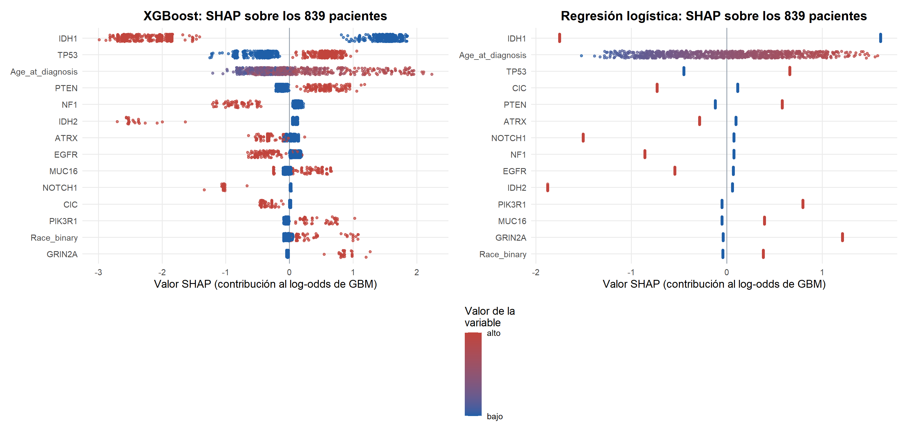
importancia <- tibble(variable = PREDICTORAS,
XGBoost = colMeans(abs(sv_xgb))[PREDICTORAS],
`Regresión Logística` = colMeans(abs(sv_rl))[PREDICTORAS]) |>
mutate(across(-variable, ~ 100 * .x / sum(.x))) |>
arrange(desc(XGBoost))
imp <- function(v, col) importancia[[col]][importancia$variable == v]
coef_rl <- coeficientes_logistica(finales$logistica$pipeline)$beta
anuladas <- names(coef_rl)[coef_rl == 0]
importancia |>
head(10) |>
mutate(across(-variable, ~ num(.x, 1))) |>
rename(Variable = variable) |>
tabla_resultado("Importancia global: % del total de |SHAP| medio", align = c("l", "r", "r"))| Variable | XGBoost | Regresión Logística |
|---|---|---|
| IDH1 | 45,9 | 38,1 |
| TP53 | 13,0 | 12,2 |
| Age_at_diagnosis | 11,7 | 12,4 |
| PTEN | 5,2 | 4,4 |
| NF1 | 4,1 | 3,2 |
| IDH2 | 3,8 | 2,5 |
| ATRX | 3,1 | 3,3 |
| EGFR | 2,7 | 3,0 |
| MUC16 | 1,9 | 2,0 |
| NOTCH1 | 1,6 | 3,2 |
Los dos modelos, construidos con supuestos opuestos, cuentan la misma historia: IDH1 es con diferencia la variable más importante (46 % de la contribución total en XGBoost y 38 % en la logística). Las cuatro primeras en XGBoost (IDH1, TP53, Age_at_diagnosis, PTEN) reúnen el 76 % de la importancia en XGBoost y el 67 % en la logística. El sentido de los efectos principales coincide con el EDA: la mutación de IDH1 empuja con fuerza hacia LGG, la edad avanzada hacia GBM de forma aproximadamente monótona, y la mutación de PTEN hacia GBM; CIC, NF1 e IDH2 mutados empujan hacia LGG.
Hay tres diferencias con el análisis univariado del EDA que muestran lo que aporta un modelo multivariante:
TP53sube al puesto 2 en XGBoost (13,0 %), aunque su asociación marginal conGradeera moderada. Su efecto es condicional: una vez se sabe si hay mutación deIDH1, la mutación deTP53aumenta la probabilidad de GBM. Una explicación biológica plausible, que el modelo no puede confirmar, es que entre los gliomas conIDH1mutadoTP53distingue el linaje astrocítico (que incluye los astrocitomas de alto grado) del oligodendroglial (asociado aCICyFUBP1).ATRXpierde casi todo su peso: es la variable número 7 en XGBoost (3,1 %) y aporta el 3,3 % en la logística. El EDA ya había mostrado su fuerte coocurrencia conTP53(\(V = 0{,}55\)) eIDH1(\(V = 0{,}46\)): su información es redundante con la de esas dos variables. La logística final usa penalización L2, así que ningún coeficiente queda exactamente en cero.EGFRcambia de signo. En el dataset la mutación deEGFRse asocia con GBM (81 de los 112 pacientes mutados son GBM); en los dos modelos, en cambio, su contribución entre los pacientes mutados es negativa (SHAP medio de -0,34 en XGBoost, coeficiente de -0,61 en la logística). No es una contradicción: los GBM conEGFRmutado son también mayores y sin mutación deIDH1, y esas dos variables ya explican su grado. Una vez descontadas, tenerEGFRmutado no añade riesgo de GBM. Es la diferencia entre asociación marginal y efecto condicional.
XGBoost, además, capta efectos no lineales que la logística no puede representar: la contribución de la edad tiene escalones (se aprecian grupos separados de puntos), y la de TP53 toma valores distintos según el resto del perfil del paciente.
2.9.2 Explicaciones locales
Se explican dos pacientes del conjunto de prueba con XGBoost: uno bien clasificado con alta confianza (el GBM con menor error) y el peor error (el paciente con mayor diferencia entre su clase real y la probabilidad predicha). El gráfico waterfall parte del valor base (log-odds medio de la cohorte) y suma una a una las contribuciones hasta llegar a la predicción del paciente. Los pacientes se identifican por su fila en TCGA_InfoWithGrade.csv (empezando en 0).
p_xgb <- proba_test$xgboost
error <- abs(y_test - p_xgb)
i_bien <- which.min(ifelse(y_test == 1, error, Inf))
i_mal <- which.max(error)
sv_test <- sv_xgb[nrow(X_train) + seq_len(nrow(X_test)), ]
pesos_lime <- en_cache("lime", function() {
map(list(i_bien, i_mal), ~ lime_pesos(finales$xgboost$pipeline, X_train, X_test[.x, ]))
}, RECALCULAR)
locales <- map2_dfr(list(i_bien, i_mal), c("bien clasificado", "peor error"), function(i, rotulo) {
k <- if (rotulo == "bien clasificado") 1 else 2
tibble(paciente = datos$id_test[i], rotulo = rotulo, real = y_test[i], proba = p_xgb[i],
variable = PREDICTORAS, valor = unlist(X_test[i, PREDICTORAS]),
shap = unlist(sv_test[i, PREDICTORAS]),
lime_media = colMeans(pesos_lime[[k]])[PREDICTORAS],
lime_de = apply(pesos_lime[[k]], 2, sd)[PREDICTORAS])
})
waterfall <- function(id, max_vars = 9) {
d <- locales |> filter(paciente == id)
top <- d |> slice_max(abs(shap), n = max_vars)
resto <- sum(d$shap) - sum(top$shap)
barras <- top |>
arrange(abs(shap)) |>
transmute(etiqueta = sprintf("%s = %s", variable,
ifelse(variable == "Age_at_diagnosis", num(valor, 1),
num(valor, 0))),
shap) |>
add_row(etiqueta = sprintf("otras %d variables", nrow(d) - max_vars), shap = resto,
.before = 1) |>
mutate(fin = base_xgb + cumsum(shap), inicio = fin - shap,
etiqueta = factor(etiqueta, levels = etiqueta), sentido = shap > 0)
info <- d[1, ]
ggplot(barras) +
geom_vline(xintercept = base_xgb, color = "#9aa5b1", linetype = "dashed") +
geom_segment(aes(x = inicio, xend = fin, y = etiqueta, yend = etiqueta, color = sentido),
linewidth = 6) +
geom_text(aes(x = pmax(inicio, fin), y = etiqueta,
label = ifelse(shap > 0, paste0("+", num(shap)), num(shap))),
hjust = -0.15, size = 3.2) +
scale_color_manual(values = c(`TRUE` = "#c1443c", `FALSE` = "#1f5fa8"), guide = "none") +
scale_x_continuous(expand = expansion(mult = c(0.05, 0.15))) +
labs(title = sprintf("Paciente %d (%s): real %s, P(GBM) = %s", info$paciente, info$rotulo,
ifelse(info$real == 1, "GBM", "LGG"), num(info$proba)),
subtitle = sprintf("Valor base %s → predicción %s (log-odds)",
num(base_xgb), num(base_xgb + sum(d$shap))),
x = "Log-odds de GBM", y = NULL)
}
id_bien <- datos$id_test[i_bien]
id_mal <- datos$id_test[i_mal]
waterfall(id_bien) + waterfall(id_mal)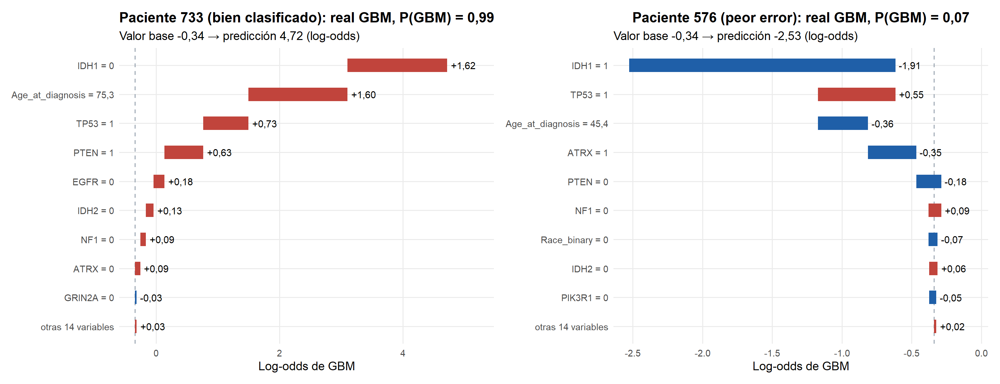
loc <- function(id, var, col = "shap") locales[[col]][locales$paciente == id & locales$variable == var]
mutados <- function(id) {
v <- locales |> filter(paciente == id, variable %in% GENES, valor == 1) |> pull(variable)
if (length(v) == 0) "ninguna mutación" else paste0("`", v, "`", collapse = ", ")
}Paciente 733 (GBM, P = 0,99). 75 años, sin mutación de IDH1 y con TP53, PTEN, BCOR. Las contribuciones más grandes son IDH1 (+1,62), Age_at_diagnosis (+1,60), TP53 (+0,73): casi todas empujan en la misma dirección, hacia GBM. Es el perfil típico de un glioblastoma.
Paciente 576 (GBM, P = 0,07), el peor error. Tiene 45 años y IDH1, TP53, ATRX, PIK3CA. Las contribuciones más grandes son IDH1 (-1,91), TP53 (+0,55), Age_at_diagnosis (-0,36). La mutación de IDH1 arrastra la predicción hacia LGG y lo demás no alcanza a compensarla. Este perfil (IDH1 mutado en un adulto joven, a menudo con TP53 y ATRX) es el de un astrocitoma con IDH mutado; la clasificación de la OMS de 2021 ya no llama glioblastoma a estos tumores aunque sean de grado 4, mientras que las etiquetas de TCGA siguen el criterio histológico anterior. El error del modelo no es aleatorio: corresponde a un subgrupo cuyo grado no puede deducirse del perfil mutacional disponible y que requeriría información adicional (histología, CDKN2A/B, 1p/19q).
2.9.3 Comparación con LIME
LIME (paquete lime) explica una predicción ajustando, alrededor del paciente, un modelo lineal ponderado sobre perturbaciones aleatorias de sus variables. Es agnóstico al modelo, pero su explicación depende de cómo se perturbe (aquí: la edad se discretiza en cuartiles y las binarias, presentadas como factores, se muestrean con su frecuencia en el entrenamiento), de la anchura del núcleo de proximidad y de la semilla. Sus pesos están en la escala de la probabilidad, no del log-odds, así que se comparan rangos y signos, no magnitudes. Para medir la estabilidad, cada explicación se repite con 10 semillas y 5 000 perturbaciones.
grafico_lime <- function(id) {
d <- locales |> filter(paciente == id) |> slice_max(abs(shap), n = 8)
escala_s <- max(abs(locales$shap[locales$paciente == id]))
escala_l <- max(abs(locales$lime_media[locales$paciente == id]))
barras <- bind_rows(
d |> transmute(variable, tecnica = "SHAP (normalizado)", valor = shap / escala_s, de = NA_real_),
d |> transmute(variable, tecnica = "LIME (media ± DE, 10 semillas)",
valor = lime_media / escala_l, de = lime_de / escala_l)
) |>
mutate(variable = factor(variable, levels = rev(d$variable)),
y = as.integer(variable) + ifelse(str_starts(tecnica, "SHAP"), 0.2, -0.2))
ggplot(barras, aes(valor, y, fill = tecnica)) +
geom_col(orientation = "y", width = 0.38) +
geom_segment(aes(x = valor - de, xend = valor + de, yend = y), color = "#5a6472",
na.rm = TRUE) +
geom_vline(xintercept = 0, color = "#5a6472") +
scale_y_continuous(breaks = seq_along(levels(barras$variable)),
labels = levels(barras$variable)) +
scale_fill_manual(values = c("SHAP (normalizado)" = "#9085e9",
"LIME (media ± DE, 10 semillas)" = "#199e70"), name = NULL) +
labs(title = sprintf("Paciente %d (%s)", id, d$rotulo[1]),
x = "Contribución relativa (máximo = 1)", y = NULL)
}
grafico_lime(id_bien) + grafico_lime(id_mal) + plot_layout(guides = "collect") &
theme(legend.position = "bottom")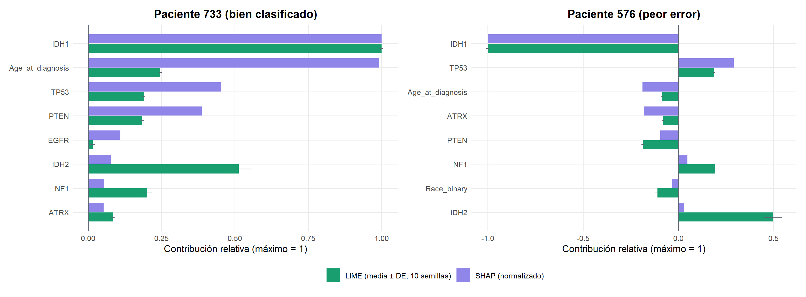
lime_comp <- map_dfr(c(id_bien, id_mal), function(id) {
d <- locales |> filter(paciente == id)
top <- order(abs(d$shap), decreasing = TRUE)[1:8]
orden_lime <- order(abs(d$lime_media), decreasing = TRUE)
tibble(paciente = id, rotulo = d$rotulo[1],
spearman = cor(abs(d$shap), abs(d$lime_media), method = "spearman"),
signos = mean(sign(d$shap[top]) == sign(d$lime_media[top])),
top3_shap = paste(d$variable[order(abs(d$shap), decreasing = TRUE)[1:3]], collapse = ", "),
top3_lime = paste(d$variable[orden_lime[1:3]], collapse = ", "),
cv_lime_top5 = mean(d$lime_de[orden_lime[1:5]] / abs(d$lime_media[orden_lime[1:5]])))
})
lime_comp |>
transmute(Paciente = sprintf("%d (%s)", paciente, rotulo),
`Spearman |SHAP| vs |LIME| (23 variables)` = num(spearman, 3),
`Signos coincidentes (top 8 SHAP)` = pct(signos), `Top 3 SHAP` = top3_shap,
`Top 3 LIME` = top3_lime, `CV medio de los pesos LIME (top 5)` = num(cv_lime_top5, 3)) |>
tabla_resultado("Comparación entre SHAP y LIME", full_width = TRUE)| Paciente | Spearman |SHAP| vs |LIME| (23 variables) | Signos coincidentes (top 8 SHAP) | Top 3 SHAP | Top 3 LIME | CV medio de los pesos LIME (top 5) |
|---|---|---|---|---|---|
| 733 (bien clasificado) | 0,814 | 100 % | IDH1, Age_at_diagnosis, TP53 | IDH1, IDH2, Age_at_diagnosis | 0,059 |
| 576 (peor error) | 0,756 | 100 % | IDH1, TP53, Age_at_diagnosis | IDH1, IDH2, NOTCH1 | 0,072 |
En términos generales, LIME y SHAP coinciden: la correlación de Spearman entre la magnitud de las contribuciones de las 23 variables es de 0,81 y 0,76, y el signo coincide en el 100 % y el 100 % de las ocho variables principales según SHAP. LIME es estable aquí: el coeficiente de variación de sus pesos principales entre 10 semillas es del 6–7 %, con 5 000 perturbaciones.
Las divergencias más claras son IDH2 y NOTCH1: LIME las pone entre las tres variables más importantes, mientras que SHAP no. Cuando divergen, ninguno de los dos está equivocado; responden preguntas distintas:
- SHAP reparte la diferencia entre la predicción del paciente y la predicción media. Una variable rara (como
IDH2, mutado en ≈ 3 % de la cohorte) que este paciente no tiene lo deja prácticamente igual que el promedio: contribución cercana a cero. - LIME ajusta un modelo lineal sobre perturbaciones del paciente. En algunas perturbaciones esa variable rara pasa a valer 1, y si el modelo reacciona mucho a ella LIME le da un peso grande. Mide una sensibilidad contrafactual: “si este paciente tuviera esa mutación, la predicción cambiaría mucho”.
En general, las dos técnicas divergen con variables raras de efecto grande, con variables correlacionadas (LIME perturba cada variable por separado y puede crear combinaciones imposibles, como ATRX mutado sin TP53) y con la edad, que LIME discretiza en cuartiles y por eso pierde resolución. Para explicar la predicción de un paciente concreto, SHAP es preferible por sus propiedades de eficiencia y consistencia; LIME aporta una lectura complementaria de qué cambios del perfil alterarían el diagnóstico.
2.10 Robustez y estabilidad de las métricas
Una AUC reportada como un solo número oculta la variabilidad del muestreo y de la optimización. Por eso todas las métricas del capítulo se dan como media ± desviación estándar sobre los 10 pliegues externos. Aquí se comparan dos magnitudes: cuánto varía un mismo procedimiento de un pliegue a otro y cuánto difieren entre sí los procedimientos.
orden_combos <- resumen |> arrange(desc(auc_media)) |> pull(combo)
pliegues |>
mutate(combo = factor(combo, levels = orden_combos),
Modelo = factor(nombre(modelo), levels = nombre(MODELOS))) |>
ggplot(aes(combo, auc, color = Modelo)) +
geom_point(size = 0.9, alpha = 0.45) +
stat_summary(fun = mean, fun.min = mean, fun.max = mean, geom = "crossbar",
width = 0.6, linewidth = 0.35) +
scale_x_discrete(labels = etiqueta_combo) +
scale_color_manual(values = COLOR_MODELO, name = NULL) +
labs(title = "AUC en cada pliegue externo (puntos) y su media (raya), de mejor a peor",
x = NULL, y = "AUC del pliegue externo") +
theme(axis.text.x = element_text(angle = 90, vjust = 0.5, hjust = 1, size = 7),
panel.grid.major.x = element_blank())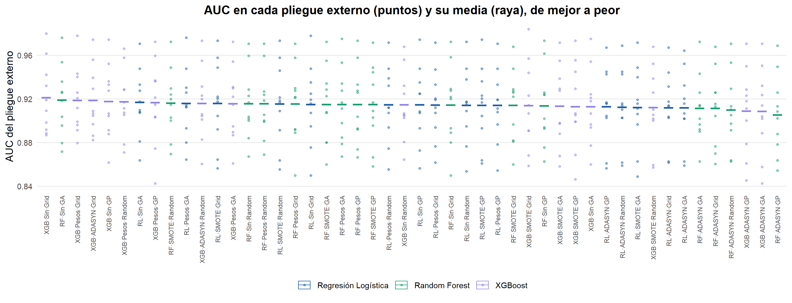
tibble(
Medida = c("DE media de un procedimiento entre pliegues",
"DE de las medias entre los 48 procedimientos",
"Rango de las medias (mejor − peor)"),
Valor = num(c(de_dentro, de_entre, rango_medias), 4)
) |>
tabla_resultado("Variación dentro y entre procedimientos", align = c("l", "r"))| Medida | Valor |
|---|---|
| DE media de un procedimiento entre pliegues | 0,0345 |
| DE de las medias entre los 48 procedimientos | 0,0028 |
| Rango de las medias (mejor − peor) | 0,0158 |
2.10.1 Sensibilidad a la semilla
Para las tres combinaciones finales se repite la búsqueda completa sobre el entrenamiento con cinco semillas distintas (la semilla cambia los pliegues internos, el muestreo del optimizador, el sobremuestreo y la aleatoriedad del modelo) y se mide la AUC en prueba de cada modelo resultante. Es una medida de cuánto depende el resultado de la suerte del procedimiento, no de la elección del modelo.
semillas_t <- en_cache("semillas",
function() sensibilidad_semillas(finales, X_train, y_train, X_test, y_test),
RECALCULAR)
semillas <- semillas_t |>
group_by(modelo) |>
summarise(auc_interna_media = mean(auc_interna), auc_interna_de = sd(auc_interna),
auc_test_media = mean(auc_test), auc_test_de = sd(auc_test),
auc_test_min = min(auc_test), auc_test_max = max(auc_test)) |>
slice(match(MODELOS, modelo))
sm <- function(m, col) semillas[[col]][semillas$modelo == m]
semillas |>
transmute(Modelo = nombre(modelo),
`AUC interna` = paste(num(auc_interna_media, 4), "±", num(auc_interna_de, 4)),
`AUC test` = paste(num(auc_test_media, 4), "±", num(auc_test_de, 4)),
`AUC test mínima` = num(auc_test_min, 4), `AUC test máxima` = num(auc_test_max, 4)) |>
tabla_resultado("AUC con cinco semillas distintas (media ± DE)", align = c("l", rep("r", 4)))| Modelo | AUC interna | AUC test | AUC test mínima | AUC test máxima |
|---|---|---|---|---|
| Regresión Logística | 0,9202 ± 0,0011 | 0,9206 ± 0,0017 | 0,9191 | 0,9232 |
| Random Forest | 0,9191 ± 0,0014 | 0,9280 ± 0,0013 | 0,9262 | 0,9297 |
| XGBoost | 0,9174 ± 0,0019 | 0,9281 ± 0,0034 | 0,9257 | 0,9340 |
La desviación estándar media de un procedimiento entre pliegues (0,035) es 12 veces mayor que la desviación entre las medias de los 48 procedimientos (0,003), y 2,2 veces la distancia entre el mejor y el peor (0,016). La variabilidad entre pacientes domina por completo la variabilidad entre métodos: con 67 pacientes por pliegue, un pliegue “difícil” (con más GBM de perfil IDH1 mutado, como el paciente 576) baja la AUC de todos los procedimientos a la vez, y uno fácil la sube, sin cambiar mucho su orden.
La sensibilidad a la semilla apunta en la misma dirección. Repetir la búsqueda con cinco semillas cambia la AUC de prueba en ±0,002 en la regresión logística, ±0,001 en Random Forest y ±0,003 en XGBoost (rango total 0,919–0,934). El más sensible es XGBoost: en los árboles se suman varias fuentes de azar que dependen de la semilla (el muestreo de filas y columnas y, si lo hay, el sobremuestreo), mientras que la logística solo depende de los pliegues internos y del optimizador. En los tres casos la variación por semilla es del mismo orden que las diferencias entre modelos, así que ninguna diferencia observada puede atribuirse con seguridad a la elección del modelo sin una prueba formal.
2.11 Comparación estadística
Con 48 combinaciones hay \(\binom{48}{2} = 1\,128\) pares posibles; contrastarlos uno a uno con \(\alpha = 0{,}05\) produciría unos 56 falsos positivos solo por azar. Por eso la comparación sigue una estrategia jerárquica:
- Prueba ómnibus de Friedman (
friedman.test) sobre los rangos de cada combinación en cada pliegue externo (los pliegues son los bloques: las 48 combinaciones se evaluaron sobre los mismos pliegues). \(H_0\): todas tienen el mismo rango promedio. Se reporta también la corrección de Iman-Davenport, menos conservadora. - Si se rechaza, post-hoc de Nemenyi con su diferencia crítica (CD), \(\text{CD} = q_\alpha \sqrt{k(k+1)/(6N)}\), con \(q_\alpha\) el cuantil del rango estudentizado (
qtukey) dividido entre \(\sqrt{2}\): dos procedimientos cuyos rangos promedio difieren menos que la CD son estadísticamente indistinguibles, con control conjunto del error tipo I. - Comparaciones dirigidas entre los tres modelos finales con la prueba de DeLong (
pROC::roc.test) sobre el conjunto de prueba, ajustadas por Holm, con intervalos bootstrap BCa. - Tamaño del efecto (delta de Cliff,
effsize::cliff.delta) para todas las comparaciones, sean o no significativas.
2.11.1 Prueba de Friedman y diferencia crítica sobre las 48 combinaciones
matriz48 <- pliegues |> select(pliegue, combo, auc) |>
pivot_wider(names_from = combo, values_from = auc) |> select(-pliegue) |> as.matrix()
fr <- friedman(matriz48)
cd48 <- diferencia_critica(fr$k, fr$N)
tibble(
Prueba = c("Friedman", "Iman-Davenport", "Diferencia crítica de Nemenyi (k = 48, N = 10)"),
Resultado = c(sprintf("χ²(%d) = %s; p = %s", fr$gl, num(fr$chi2, 2), num_p(fr$p)),
sprintf("F = %s; p = %s", num(fr$F_ID, 2), num_p(fr$p_ID)),
sprintf("CD = %s rangos", num(cd48, 2)))
) |>
tabla_resultado("Prueba ómnibus sobre las 48 combinaciones", align = c("l", "r"))| Prueba | Resultado |
|---|---|
| Friedman | χ²(47) = 43,41; p = 0,6219 |
| Iman-Davenport | F = 0,92; p = 0,6332 |
| Diferencia crítica de Nemenyi (k = 48, N = 10) | CD = 24,88 rangos |
rangos48 <- tibble(combo = names(fr$rangos), rango = unname(fr$rangos)) |>
mutate(Modelo = factor(nombre(str_extract(combo, "^[^|]+")), levels = nombre(MODELOS)),
etiqueta = factor(etiqueta_combo(combo), levels = rev(etiqueta_combo(combo))))
ggplot(rangos48, aes(rango, etiqueta, color = Modelo)) +
annotate("rect", xmin = min(rangos48$rango), xmax = min(rangos48$rango) + cd48,
ymin = -Inf, ymax = Inf, fill = "#eef2f7") +
geom_point(size = 2.4) +
scale_color_manual(values = COLOR_MODELO, name = NULL) +
labs(title = "Rango promedio de las 48 combinaciones (Friedman–Nemenyi)",
subtitle = "Banda sombreada: indistinguibles del mejor según la CD de Nemenyi",
x = "Rango promedio (1 = mejor)", y = NULL) +
theme(axis.text.y = element_text(size = 7))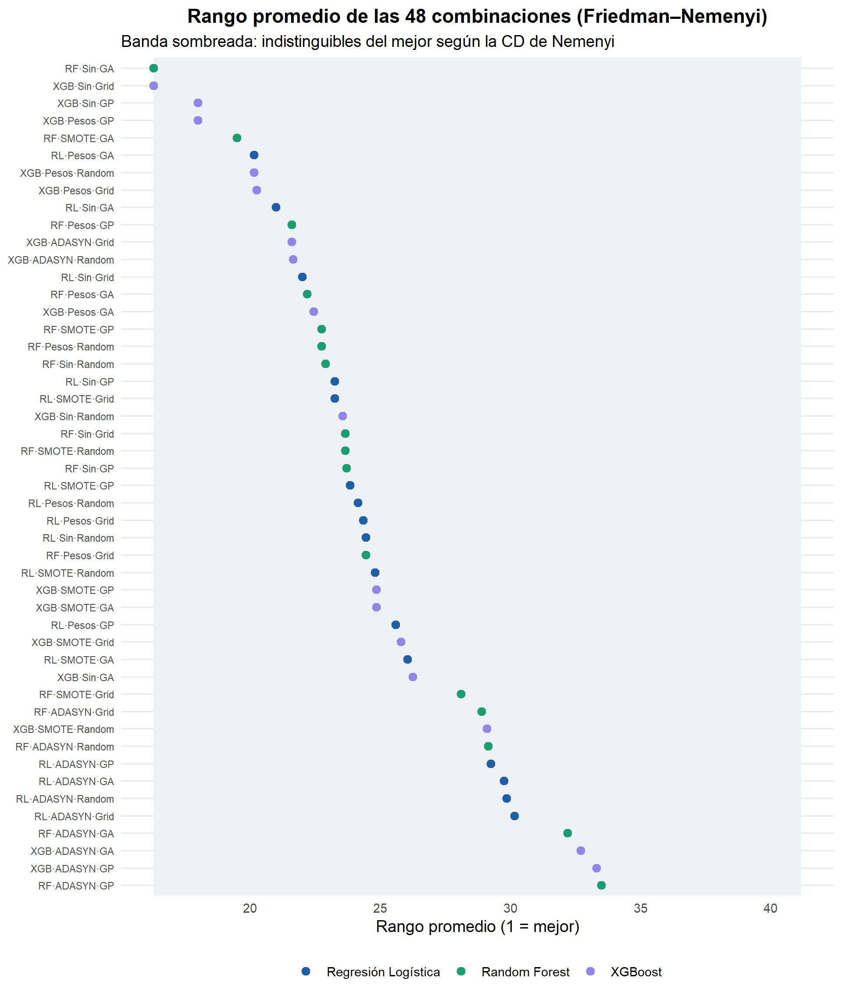
La prueba ómnibus no rechaza la hipótesis nula: \(\chi^2_F(47) =\) 43,4, \(p =\) 0,6219. No hay evidencia de que alguna de las 48 combinaciones rinda distinto de las demás. Por el protocolo jerárquico, el análisis post-hoc sobre las 48 no procede; el gráfico se incluye solo como descripción: los rangos promedio van de 16,3 a 33,5 y la diferencia crítica de Nemenyi con 48 procedimientos y 10 bloques es de 24,9 rangos, así que todas las combinaciones caen dentro de la banda de “indistinguibles del mejor”.
2.11.2 Análisis por factor
Con 48 procedimientos y 10 bloques la CD es enorme. El diseño factorial permite una pregunta más precisa: para estudiar un factor (modelo, balanceo u optimizador), cada combinación de los otros dos factores con cada pliegue forma un bloque. Así, por ejemplo, los cuatro optimizadores se comparan en 120 bloques (3 modelos × 4 balanceos × 10 pliegues) y la prueba gana mucha potencia. La salvedad es que los bloques que comparten pliegue no son del todo independientes.
NIVELES <- list(modelo = MODELOS, balanceo = BALANCEOS, metodo = OPTIMIZADORES)
NOMBRE_FACTOR <- c(modelo = "Modelo", balanceo = "Balanceo", metodo = "Optimizador")
pruebas_f <- map(set_names(names(NIVELES)), function(f) {
r <- friedman(matriz_factor(pliegues, f, NIVELES[[f]]))
r$cd <- diferencia_critica(r$k, r$N)
r$nemenyi <- nemenyi(r$rangos, r$N)
r
})
factores <- map_dfr(names(pruebas_f), function(f) {
r <- pruebas_f[[f]]
tibble(factor = f, bloques = r$N, k = r$k, chi2 = r$chi2, gl = r$gl, p = r$p, cd = r$cd)
})
rangos_f <- map_dfr(names(pruebas_f), ~ tibble(factor = .x, nivel = names(pruebas_f[[.x]]$rangos),
rango = unname(pruebas_f[[.x]]$rangos)))
fa <- function(f, col) factores[[col]][factores$factor == f]
rg <- function(f, nivel) rangos_f$rango[rangos_f$factor == f & rangos_f$nivel == nivel]
nm <- function(f, a, b) pruebas_f[[f]]$nemenyi[a, b]
d_factores <- rangos_f |>
left_join(factores, by = "factor") |>
mutate(titulo = sprintf("%s: χ²(%d) = %s, p %s · %d bloques", NOMBRE_FACTOR[factor], gl,
num(chi2, 1), p_txt(p), bloques),
titulo = factor(titulo, levels = unique(titulo)),
nivel = nombre(nivel)) |>
group_by(titulo) |>
mutate(mejor = min(rango)) |>
ungroup() |>
arrange(titulo, desc(rango)) |>
mutate(clave = factor(paste(titulo, nivel), levels = paste(titulo, nivel)))
ggplot(d_factores, aes(rango, clave)) +
geom_rect(aes(xmin = mejor, xmax = mejor + cd, ymin = -Inf, ymax = Inf),
fill = "#eef2f7", inherit.aes = FALSE,
data = ~ distinct(.x, titulo, mejor, cd)) +
geom_point(size = 3, color = "#1f5fa8") +
geom_text(aes(label = num(rango)), vjust = -0.9, size = 3) +
facet_wrap(~ titulo, ncol = 1, scales = "free_y") +
scale_y_discrete(labels = set_names(d_factores$nivel, d_factores$clave)) +
labs(title = "Rangos promedio por factor (banda: diferencia crítica de Nemenyi desde el mejor)",
x = "Rango promedio (1 = mejor)", y = NULL)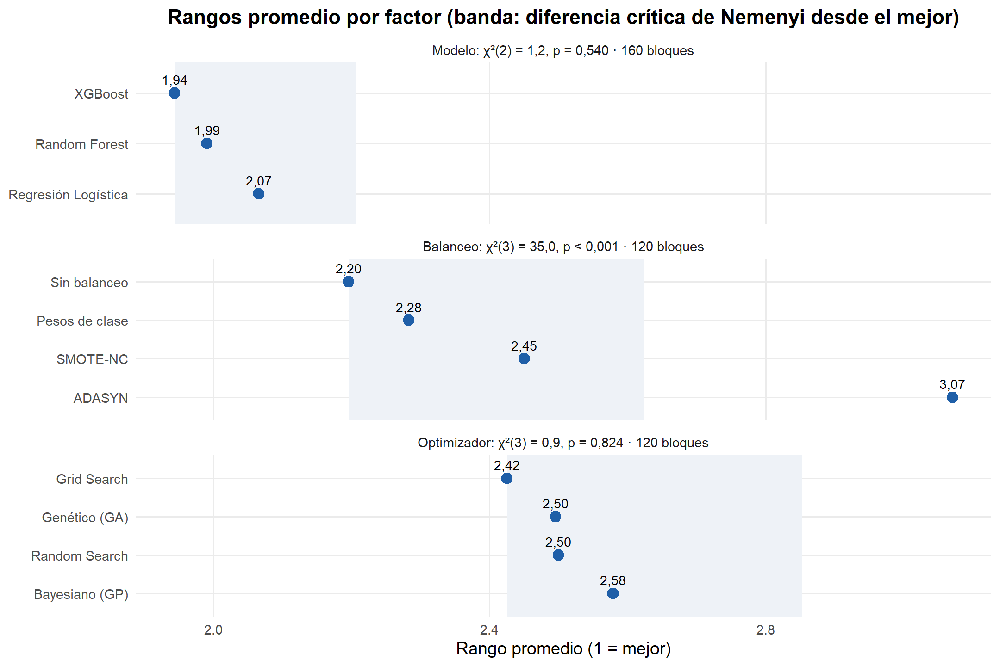
factores |>
transmute(Factor = NOMBRE_FACTOR[factor], Bloques = bloques, k, `χ²` = num(chi2, 2),
p = num_p(p), CD = num(cd, 3)) |>
tabla_resultado("Prueba de Friedman por factor", align = c("l", rep("r", 5)))| Factor | Bloques | k | χ² | p | CD |
|---|---|---|---|---|---|
| Modelo | 160 | 3 | 1,23 | 0,5405 | 0,262 |
| Balanceo | 120 | 4 | 35,03 | 1,20e-07 | 0,428 |
| Optimizador | 120 | 4 | 0,91 | 0,8240 | 0,428 |
matriz_nemenyi <- function(f) {
niveles <- NIVELES[[f]]
m <- pruebas_f[[f]]$nemenyi[niveles, niveles]
as_tibble(matrix(num(m, 4), nrow(m), dimnames = list(NULL, nombre(niveles)))) |>
mutate(` ` = nombre(niveles), .before = 1)
}
tabla_resultado(matriz_nemenyi("modelo"), "p-valores de Nemenyi entre modelos")| Regresión Logística | Random Forest | XGBoost | |
|---|---|---|---|
| Regresión Logística | 1,0000 | 0,7805 | 0,5202 |
| Random Forest | 0,7805 | 1,0000 | 0,9077 |
| XGBoost | 0,5202 | 0,9077 | 1,0000 |
| Grid Search | Random Search | Bayesiano (GP) | Genético (GA) | |
|---|---|---|---|---|
| Grid Search | 1,0000 | 0,9696 | 0,7915 | 0,9742 |
| Random Search | 0,9696 | 1,0000 | 0,9646 | 1,0000 |
| Bayesiano (GP) | 0,7915 | 0,9646 | 1,0000 | 0,9591 |
| Genético (GA) | 0,9742 | 1,0000 | 0,9591 | 1,0000 |
Al estudiar cada factor por separado, con más bloques, la prueba gana potencia. Sale significativo: Balanceo.
- Modelo (\(\chi^2_F(2) = 1{,}2\), \(p = 0{,}5405\)): el mejor rango promedio es el de XGBoost (1,94) y el peor el de Regresión Logística (2,07). Ninguna comparación de Nemenyi es significativa.
- Balanceo (\(\chi^2_F(3) = 35{,}0\), \(p < 0{,}0001\)): el mejor rango promedio es el de sin balanceo (2,20) y el peor el de ADASYN (3,07). Nemenyi separa sin balanceo de ADASYN (\(p < 0{,}0001\)); pesos de clase de ADASYN (\(p < 0{,}0001\)); SMOTE-NC de ADASYN (\(p = 0{,}0011\)).
- Optimizador (\(\chi^2_F(3) = 0{,}9\), \(p = 0{,}8240\)): el mejor rango promedio es el de Grid Search (2,42) y el peor el de Bayesiano (GP) (2,58). Ninguna comparación de Nemenyi es significativa.
Incluso cuando un factor sale significativo, la diferencia de rangos promedio es pequeña: significa que un nivel gana un poco más de la mitad de los enfrentamientos, por márgenes de AUC muy pequeños. Los tamaños del efecto de la sección siguiente lo cuantifican.
2.11.3 Comparaciones dirigidas: DeLong sobre el conjunto de prueba
Las tres comparaciones por pares entre los modelos finales se contrastan con la prueba de DeLong, que tiene en cuenta que las dos AUC se miden sobre los mismos pacientes (y por tanto están correlacionadas). Los p-valores se ajustan por Holm-Bonferroni y la diferencia de AUC se acompaña de un intervalo bootstrap BCa pareado.
PARES <- list(c("logistica", "random_forest"), c("logistica", "xgboost"),
c("random_forest", "xgboost"))
delong_tab <- map_dfr(PARES, function(ab) {
dl <- delong(y_test, proba_test[[ab[1]]], proba_test[[ab[2]]])
ic <- ic_bootstrap(function(z) auc_roc(z$y, z$a) - auc_roc(z$y, z$b),
data.frame(y = y_test, a = proba_test[[ab[1]]], b = proba_test[[ab[2]]]))
tibble(modelo_a = ab[1], modelo_b = ab[2], diferencia = dl$diferencia, ic_inf = ic[1],
ic_sup = ic[2], z = dl$z, p = dl$p)
}) |>
mutate(p_holm = p.adjust(p, "holm"))
delong_tab |>
transmute(`Modelo A` = nombre(modelo_a), `Modelo B` = nombre(modelo_b),
`Diferencia de AUC (A − B)` = signo(diferencia, 4),
`IC 95 % bootstrap BCa` = sprintf("[%s; %s]", num(ic_inf, 3), num(ic_sup, 3)),
z = num(z, 3), `p crudo` = num(p, 4), `p ajustado (Holm)` = num(p_holm, 4)) |>
tabla_resultado("Prueba de DeLong entre los modelos finales (conjunto de prueba)",
align = c("l", "l", rep("r", 5)))| Modelo A | Modelo B | Diferencia de AUC (A − B) | IC 95 % bootstrap BCa | z | p crudo | p ajustado (Holm) |
|---|---|---|---|---|---|---|
| Regresión Logística | Random Forest | -0,0082 | [-0,034; 0,014] | -0,662 | 0,5079 | 1,0000 |
| Regresión Logística | XGBoost | -0,0058 | [-0,032; 0,012] | -0,551 | 0,5818 | 1,0000 |
| Random Forest | XGBoost | +0,0023 | [-0,015; 0,021] | 0,274 | 0,7842 | 1,0000 |
2.11.4 Intervalos de confianza y tamaño del efecto
Los intervalos bootstrap BCa de la AUC en prueba de cada modelo final se complementan con el delta de Cliff, una medida no paramétrica de dominancia coherente con el uso de rangos: \(\delta = P(A > B) - P(A < B)\), interpretado con los umbrales de Romano et al. (2006) (\(|\delta| < 0{,}147\) despreciable; \(< 0{,}33\) pequeño; \(< 0{,}474\) mediano; grande en otro caso). Se calcula sobre las AUC de los 10 pliegues externos de las combinaciones seleccionadas y, de forma agregada, sobre todos los pliegues de cada familia y de cada optimizador.
ic_test <- map_dfr(MODELOS, function(m) {
p <- proba_test[[m]]
map_dfr(list(list("AUC", function(z) auc_roc(z$y, z$p)),
list("Recall (GBM)", function(z) mean(z$p[z$y == 1] >= 0.5))), function(e) {
ic <- ic_bootstrap(e[[2]], data.frame(y = y_test, p = p))
tibble(modelo = m, metrica = e[[1]], estimacion = e[[2]](data.frame(y = y_test, p = p)),
ic_inf = ic[1], ic_sup = ic[2])
})
})
ic_test |>
transmute(Modelo = nombre(modelo), `Métrica` = metrica, `Estimación` = num(estimacion, 3),
`IC 95 %` = sprintf("[%s; %s]", num(ic_inf, 3), num(ic_sup, 3))) |>
tabla_resultado("Intervalos bootstrap BCa en el conjunto de prueba",
align = c("l", "l", "r", "r")) |>
collapse_rows(columns = 1, valign = "top")| Modelo | Métrica | Estimación | IC 95 % |
|---|---|---|---|
| Regresión Logística | AUC | 0,920 | [0,869; 0,955] |
| Recall (GBM) | 0,900 | [0,809; 0,955] | |
| Random Forest | AUC | 0,928 | [0,879; 0,959] |
| Recall (GBM) | 0,914 | [0,826; 0,968] | |
| XGBoost | AUC | 0,926 | [0,880; 0,957] |
| Recall (GBM) | 0,871 | [0,773; 0,934] |
auc_sel <- map(set_names(MODELOS), function(m) {
pliegues$auc[pliegues$combo == id_combo(m, finales[[m]]$balanceo, finales[[m]]$metodo)]
})
cliff <- bind_rows(
map_dfr(PARES, function(ab) {
d1 <- delta_cliff(auc_sel[[ab[1]]], auc_sel[[ab[2]]])
d2 <- delta_cliff(pliegues$auc[pliegues$modelo == ab[1]], pliegues$auc[pliegues$modelo == ab[2]])
tibble(comparacion = paste(nombre(ab[1]), "vs", nombre(ab[2])), delta_sel = d1,
magnitud_sel = magnitud_cliff(d1), delta_familia = d2,
magnitud_familia = magnitud_cliff(d2))
}),
map_dfr(c("grid", "bayesiano", "genetico"), function(o) {
d2 <- delta_cliff(pliegues$auc[pliegues$metodo == o], pliegues$auc[pliegues$metodo == "random"])
tibble(comparacion = paste(nombre(o), "vs Random Search"), delta_sel = NA_real_,
magnitud_sel = "", delta_familia = d2, magnitud_familia = magnitud_cliff(d2))
})
)
cliff |>
transmute(`Comparación` = comparacion,
`δ combinaciones seleccionadas` = ifelse(is.na(delta_sel), "—",
sprintf("%s (%s)", signo(delta_sel, 3), magnitud_sel)),
`δ todas las combinaciones de la familia` = sprintf("%s (%s)", signo(delta_familia, 3),
magnitud_familia)) |>
tabla_resultado("Tamaño del efecto: delta de Cliff sobre las AUC de los pliegues externos",
align = c("l", "r", "r"))| Comparación | δ combinaciones seleccionadas | δ todas las combinaciones de la familia |
|---|---|---|
| Regresión Logística vs Random Forest | -0,020 (despreciable) | +0,011 (despreciable) |
| Regresión Logística vs XGBoost | -0,040 (despreciable) | +0,009 (despreciable) |
| Random Forest vs XGBoost | -0,040 (despreciable) | -0,026 (despreciable) |
| Grid Search vs Random Search | — | +0,020 (despreciable) |
| Bayesiano (GP) vs Random Search | — | -0,009 (despreciable) |
| Genético (GA) vs Random Search | — | -0,001 (despreciable) |
magnitudes <- setdiff(c(cliff$magnitud_sel, cliff$magnitud_familia), "")
todo_despreciable <- all(magnitudes == "despreciable")
magnitud_max <- magnitud_cliff(max(abs(c(cliff$delta_sel, cliff$delta_familia)), na.rm = TRUE))
ic_auc <- ic_test |> filter(metrica == "AUC")
ic_rec <- ic_test |> filter(metrica != "AUC")Ninguna comparación dirigida entre los modelos finales es significativa: las diferencias de AUC en prueba son de 0,002 a 0,008, con p-valores de DeLong entre 0,51 y 0,78 (1 en los tres casos tras el ajuste de Holm), y los tres intervalos bootstrap de la diferencia contienen el cero. Los tamaños del efecto confirman que la cuestión no es solo de potencia: el delta de Cliff es despreciable (\(|\delta| \le\) 0,04) en todas las comparaciones entre modelos y entre optimizadores, tanto para las combinaciones seleccionadas como para todas las de cada familia.
La conclusión estadística es que, con estos datos, los tres modelos son equivalentes en capacidad discriminativa, con una AUC de prueba en torno a 0,920–0,928 (IC 95 % ≈ [0,88; 0,96]) y un recall de GBM en torno al 87–91 % (IC 95 % ≈ [0,80; 0,95]). La elección entre ellos debe hacerse por otros criterios: interpretabilidad, calibración, costo y estabilidad.
2.12 ¿Cuántas variables hacen falta? Panel reducido
El objetivo general del proyecto es identificar el subconjunto mínimo de factores clínicos y mutaciones que conserva la capacidad de clasificar el grado tumoral, para evitar pruebas moleculares innecesarias. Para responderlo sin fuga de información, el ranking de variables se construye dentro de cada pliegue externo: se ajusta XGBoost con sus hiperparámetros finales sobre el pliegue de entrenamiento, se ordenan las variables por su |SHAP| medio en ese pliegue y se entrena el mejor procedimiento (XGBoost) con las \(k\) primeras. La AUC se mide en el pliegue de validación, que no intervino en el ranking.
panel_r <- en_cache("panel_reducido", function() curva_panel(finales, mejor, X_train, y_train),
RECALCULAR)
panel <- panel_r$panel |>
group_by(k) |>
summarise(auc_m = mean(auc), de = sd(auc), recall = mean(recall)) |>
rename(auc = auc_m)
pk <- function(k_, col) panel[[col]][panel$k == k_]
# Regla de un error estándar: el k más pequeño cuya AUC media no es inferior a la
# del modelo completo menos un error estándar (DE entre pliegues / raíz de 10)
k_min <- min(panel$k[panel$auc >= pk(23, "auc") - pk(23, "de") / sqrt(K_EXTERNO)])
ggplot(panel, aes(k, auc)) +
geom_ribbon(aes(ymin = auc - de, ymax = auc + de), fill = COLOR_MODELO_ID[[mejor]], alpha = 0.15) +
geom_hline(yintercept = pk(23, "auc"), linetype = "dashed", color = "#5a6472") +
geom_vline(xintercept = k_min, linetype = "dotted", color = TINTA) +
geom_line(color = COLOR_MODELO_ID[[mejor]], linewidth = 1) +
geom_point(color = COLOR_MODELO_ID[[mejor]], size = 2.6) +
annotate("text", x = k_min + 0.4, y = min(panel$auc), label = paste("k =", k_min),
hjust = 0, size = 3.4, color = TINTA) +
scale_x_continuous(breaks = panel$k) +
labs(title = "AUC según el tamaño del panel (media ± DE, 10 pliegues externos)",
subtitle = sprintf("%s con las k primeras variables · línea discontinua: modelo con las 23",
nombre(mejor)),
x = "Número de variables k (ranking SHAP dentro de cada pliegue)",
y = "AUC del pliegue externo")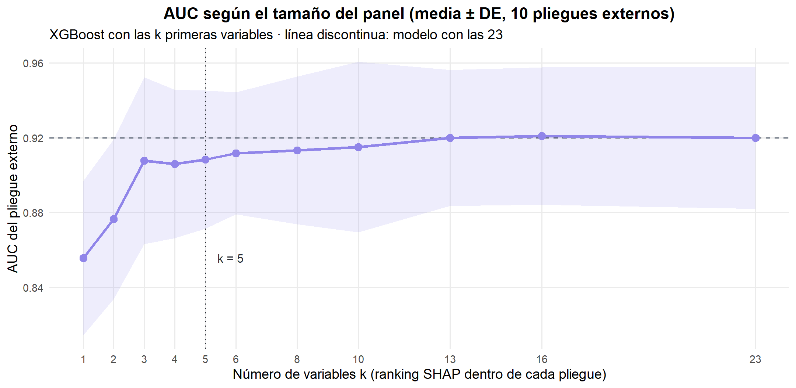
rankings <- panel_r$rankings
frecuencia <- tibble(variable = unlist(map(rankings, ~ .x[seq_len(k_min)]))) |>
count(variable, name = "pliegues") |>
mutate(posicion_media = map_dbl(variable, function(v) mean(map_int(rankings, ~ which(.x == v))))) |>
arrange(desc(pliegues), posicion_media)
frecuencia |>
transmute(Variable = variable, !!sprintf("Pliegues en que entra al top-%d", k_min) := pliegues,
`Posición media en el ranking` = num(posicion_media, 1)) |>
tabla_resultado("Estabilidad del panel reducido entre pliegues", align = c("l", "r", "r"))| Variable | Pliegues en que entra al top-5 | Posición media en el ranking |
|---|---|---|
| IDH1 | 10 | 1,0 |
| Age_at_diagnosis | 10 | 2,5 |
| TP53 | 10 | 2,5 |
| PTEN | 10 | 4,4 |
| IDH2 | 5 | 5,5 |
| NF1 | 4 | 5,6 |
| ATRX | 1 | 7,9 |
panel |>
transmute(k, AUC = num(auc, 4), DE = num(de, 4), `Recall (GBM)` = num(recall, 4)) |>
tabla_resultado("AUC y recall según el número de variables", align = rep("r", 4))| k | AUC | DE | Recall (GBM) |
|---|---|---|---|
| 1 | 0,8558 | 0,0412 | 0,9328 |
| 2 | 0,8765 | 0,0426 | 0,9115 |
| 3 | 0,9078 | 0,0446 | 0,8834 |
| 4 | 0,9059 | 0,0397 | 0,8762 |
| 5 | 0,9083 | 0,0370 | 0,8799 |
| 6 | 0,9117 | 0,0326 | 0,8727 |
| 8 | 0,9132 | 0,0395 | 0,8901 |
| 10 | 0,9150 | 0,0455 | 0,8937 |
| 13 | 0,9199 | 0,0363 | 0,8830 |
| 16 | 0,9209 | 0,0366 | 0,8866 |
| 23 | 0,9199 | 0,0378 | 0,8901 |
variables_panel <- paste0("`", frecuencia$variable[seq_len(min(k_min, nrow(frecuencia)))], "`")
estable <- all(map_lgl(rankings, ~ setequal(.x[seq_len(k_min)], rankings[[1]][seq_len(k_min)])))
umbral_panel <- pk(23, "auc") - pk(23, "de") / sqrt(K_EXTERNO)
k_prev <- max(panel$k[panel$k < k_min])
# El panel más pequeño que más se acerca al umbral sin alcanzarlo
cerca <- panel |> filter(k < k_min) |> slice_max(auc, n = 1, with_ties = FALSE)
falta_cerca <- umbral_panel - cerca$auc
vars_k <- frecuencia$variable[seq_len(k_min)]
genes_panel <- vars_k[vars_k %in% GENES]
# Variables del panel que el EDA no destacaba entre las de mayor asociación
extras_panel <- setdiff(vars_k, c("Age_at_diagnosis", "IDH1", "PTEN", "TP53", "ATRX", "CIC", "EGFR"))La curva responde a la pregunta central del proyecto. Cinco variables bastan: con IDH1, Age_at_diagnosis, TP53, PTEN e IDH2 el modelo alcanza una AUC de 0,908 ± 0,037, frente a 0,920 ± 0,038 con las 23; según la regla de un error estándar (el \(k\) más pequeño cuya AUC media no es inferior a la del modelo completo menos un error estándar), \(k =\) 5 es el panel más pequeño indistinguible del completo. Añadir las otras 18 variables cambia la AUC en +0,012, una cantidad muy inferior a la variación entre pliegues. El umbral de la regla es 0,9079 y ningún panel más pequeño lo alcanza: el que más se acerca es el de tres variables (0,9078), a menos de una milésima. La ganancia grande ocurre con las primeras variables: solo con la primera la AUC es 0,856, y con las dos primeras, 0,876.
El panel es bastante estable: las variables del panel entran en el top-5 en la mayoría de los 10 pliegues externos (tabla de arriba), aunque cada ranking se calculó sin ver los datos de validación. Coincide con las variables de mayor asociación del EDA, salvo que TP53 aparece por su efecto condicional y ATRX y CIC quedan fuera, porque su información está en buena parte contenida en IDH1 y TP53, y que entra IDH2, cuyo efecto aparece en combinación con las demás variables.
En términos prácticos, la clasificación LGG/GBM que logra un panel de 20 genes se obtiene casi igual con la edad del paciente y el estado mutacional de cuatro genes (IDH1, TP53, PTEN e IDH2), que pueden evaluarse con un panel dirigido o, en el caso de IDH1 R132H, con inmunohistoquímica.
2.13 Conclusiones del modelado
El grado del glioma se predice bien con variables clínicas y mutacionales. Los tres modelos alcanzan una AUC de 0,917–0,921 en validación anidada y de 0,920–0,928 en el conjunto de prueba, con un recall de GBM del 87–91 %. La AUC de prueba es coherente con la estimación de la validación anidada, de modo que el procedimiento no sobreestimó el desempeño.
Los tres modelos son estadísticamente equivalentes. La prueba de Friedman no detecta diferencias entre las 48 combinaciones (\(p =\) 0,6219), DeLong no distingue entre los modelos finales (\(p_\text{Holm} = 1\)) y todos los tamaños de efecto son despreciables. La variación entre pliegues (DE ≈ 0,03) es 12 veces mayor que la variación entre procedimientos.
Si hay que elegir uno, la regresión logística. Ante modelos equivalentes en discriminación decide el resto: la logística es estable ante la semilla, está razonablemente calibrada (y la recalibración con regresión isotónica la mejora), se entrena en milisegundos y sus coeficientes tienen lectura directa. XGBoost es la alternativa si se quieren captar efectos no lineales de la edad, y si se usan las probabilidades de Random Forest, el peor calibrado, conviene revisar su calibración: ninguna de las dos recalibraciones probadas la mejoró en prueba.
El balanceo no mejora la discriminación. Con un desbalance de 1,38:1, SMOTE-NC, ADASYN y los pesos de clase solo desplazan el punto de operación hacia más recall. Los pesos de clase lo hacen sin costo adicional; SMOTE-NC multiplica el tiempo de cómputo.
Los optimizadores llegan al mismo sitio. Grid Search es el que antes llega a buenas soluciones (mayor área anytime), pero con 24 evaluaciones los cuatro alcanzan AUC internas casi iguales y sus AUC externas difieren en milésimas. El bayesiano paga además el ajuste de su proceso gaussiano en cada paso, que aquí cuesta más que los propios modelos; el genético sufre convergencia prematura con una población tan pequeña. Successive Halving y early stopping no aportan con datos de este tamaño, donde cada ajuste es barato.
Cinco variables bastan.
IDH1,Age_at_diagnosis,TP53,PTENeIDH2conservan prácticamente toda la capacidad discriminativa del panel completo (AUC 0,908 frente a 0,920). Es la respuesta al objetivo general del proyecto: un panel reducido permitiría clasificar el grado tumoral casi con la misma precisión que los 20 genes.Los errores tienen una lectura clínica. El peor error del modelo es un GBM de 45 años con
IDH1,TP53,ATRX,PIK3CA. Es el perfil de un astrocitomaIDH-mutado de grado 4, que la clasificación de la OMS de 2021 ya separa del glioblastoma. Distinguir estos casos requeriría variables que el dataset no incluye.
Limitaciones. La cohorte es pequeña (839 pacientes, 168 de prueba) y predominantemente blanca (91 %), lo que limita la generalización a otras poblaciones. Las etiquetas siguen la clasificación histológica previa a 2021. Las comparaciones por factor usan bloques que comparten pliegue y no son del todo independientes. El tamaño del panel depende del criterio: con tres variables la AUC queda a 0,0001 del umbral de la regla de un error estándar, así que un panel de tres sería casi igual de defendible. Por último, los resultados dependen de las versiones de los paquetes (tabla de entorno al inicio del capítulo): xgboost, ranger y themis pueden cambiar sus valores por defecto o su generador aleatorio entre versiones, y con ellos las cifras exactas, aunque no las conclusiones.